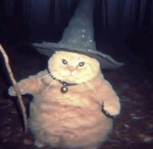
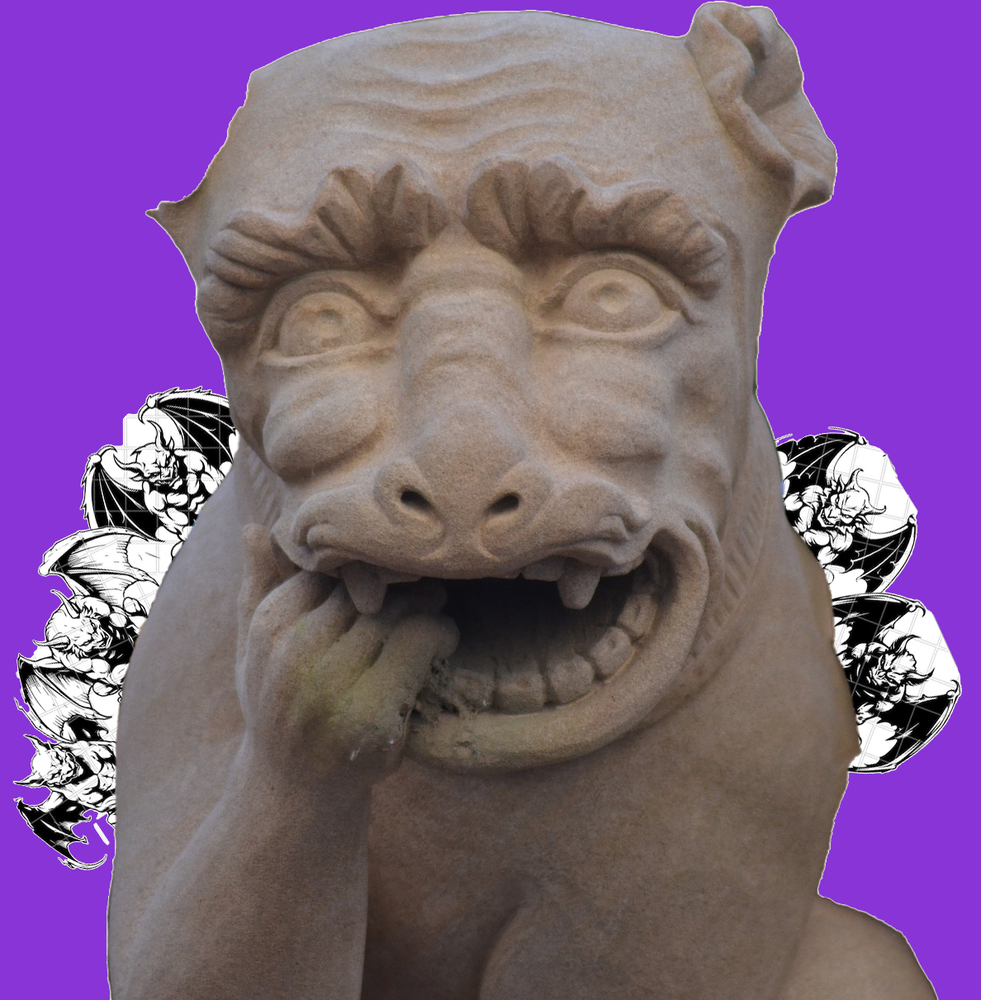
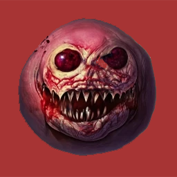
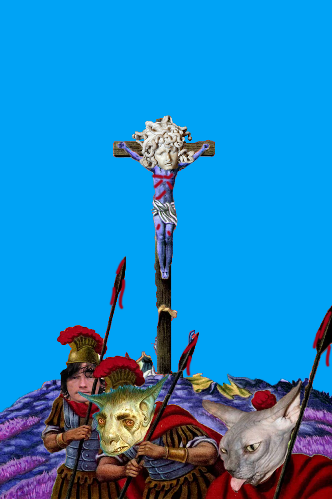
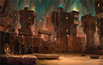
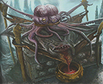

Below are the sessions following our campaign based on the Out of the Abyss campaign setting.
The party heads out to the entry level of Gravenhollow and find that Vizeran has left a map for them to get to his tower. They also find an echo of the famed wizard Elminster, who hints at knowing the party from some time in the future. Seven-Moons has resurfaced in the psyche of Seven-Stars, and the party decides the visions were a bit rough on him but are unable to help him. They figure it's not a big enough deal to detour for.
Leaving they use the magic of Gravenhollow to arrive within a tenday of Araj. On the way they encounter a drow patrol and attack, slaying the warriors and capturing the wizard. A gruesome interrogation follows, with drow scalping added for emphasis. During the interrogation the party learns that the wizard is from the city of Menzoberranzan, has a daughter, and that he is seeking a purple worm egg as a gift for his house matron, Mez'Barris Armgo. His answers are believed as Onnie cast Zone of Truth on him. Irritated by the wizard's disbelief that Lloth was behind the demon invasion, Galifraen asks "How many slaves have you sacrificed to Lloth". The wizard suposes somewhere around 20, and is scalped as he answers. Despite the pain the wizard remains concious, and curses the party as his throat is slit.
The gang continues on their way to Araj...
The party wakes to a new day in Gravenhollow and decide to seek out Ulthar and get a Stonespeaker Crystal. Francis is revealed as the wisest of the party, and is chosen to be their focus in finding Ulthar. Along the way they encounter an aged echo of King Bruenor of Mithril Hall, but he is incoherant in his dotage and unable to offer any information. Ulthar is in his chambers and stoically offers Seven-Stars a Stonespeaker Crystal in reward for the information he provided to Urmas.
Next the party seeks Vizeran, and find him studying. He greets Francis and introduces himself as former archmage of Menzoberranzan, and is pleased to hear the party is interested in working with him against the demon invaders."Seven-Wizards" Seven-Stars has disguised himself as a wizard, irritating Zodius, who learned from Francis that Vizeran was eager to speak with a wizard in the party. Vizeran appears to believe both Zodius and Seven-Stars to be wizards and mainly addresses them in his speaking. He suggests the party meet him when they are ready to leave Gravenhollow, and travel with him to his tower, Araj, where he can describe his plan out of 'earshot' of Gravenhollow. He also suggests the party gather information using their Stonespeaker Crystal and supplement the vision he has had. A vision he then recreates through powerful illusion magic.
The image of a imperious drow male mage appears, surrounded by arcane sigils and protective wards on the floor. Vizeran curses this drow over the illusion, naming him Gromphe Baenre, a mongrel supplicant of the bitch and deceiver Lloth. Gromphe gestures and incants, casting some sort of powerful spell. A surge of purple energy disrupts many of the sigils, destabilizing the ritual and Gromphe struggles, attempting to regain control of the runaway magics. Vizeran interrupts again, cursing Gromphe's imbecile attempt at summoning in a faezzrus (wild-magic) suffused zone. Gromphe loses all control as unstable abysall tears open across the Underdark, allowing demon lords to enter. Shithead admonishes Vizeran for his foul language, reciprocating Vizeran's earlier criticism of Shithead's language.
After the meeting with Vizeran the gang heads to an orbed-out room of Zodius' finding to relax and experience visions. On their way they encounter the echo of a younger Hgramm, leader of the stone giants living in Graklstugh, who is pleased to hear that he becomes leader of the giants there (he is currently studying to become such). Someone in the party offends him and he leaves. Everin wonders how it is that Hgramm did not seem to remember this encounter with the adventures when they met him in Gracklstugh.
Arriving in the orb room the party settles in and Seven-Stars begins asking questions of the crystal.
These visions take place over several days, during which a Red Wizard of Thay pokes his bald head into the chamber but quickly leaves, dismissing the party as mere echoes. Seven-Stars wants no more visions and the party prepares to leave Gravenhollow and travel with Vizeran to his tower.
The doors into Gravenhollow open, the the adventurers enter a hall wide enough for ten to walk abreast. The hall opens into a large circular hamber, lit overhead by thousands of light-infused crystals and flanked by countless doors. Innumerable levels can be seen below from a wide well in the center of the chamber. A Galeb-Dur manifests out of a nearby wall and suggests the adventurers head to their chambers before exploring the library.
A few decide to rest after acquiring a splitting heading attempting to decide where to go in the library. Galifraen, Francis, and Seven-Stars decide to seek answers in the library after the gang espies an Illithid named Xetzirbor. Xetzibor asserts that the other mind flayer the gang has met, one named Grazzilax, is also in the library. It also suggests that information may be found by 'thinking on it', ie by force of will. This is what causes several of the gang to get headaches and the three aformentioned heroes to stike out into the halls looking for answers.
Galifraen seeks an answer to 'who/what are directing the forces of chaos'. He ends up in a room dedicated to current event, where a partially carved relief depicts turmoil in a increasingly unstable Gracklstugh as well as a less detailed but similarly precarious situation in the drow city of Menzoberranzan. The room contains tablets describing events in both cities, with Gracklstugh suffering civil war between the keepers of the flame and the grey ghosts amidst increasingly powerful derro cults and Menzoberranzan's powerful families recklessly vying for power. Galifraen deems this chamber out-of-context with his question and puzzles over what it could mean.
Meanwhile, Seven-Stars maintains yogic-like focus on the question 'Why Us', and encounters one of the three Librarians of Gravenhollow, a stone giant male named Urmas, keeper of the present. Urmas is busy carving a relief when Seven-Stars enters and can only offer a determinisic answer to Seven-Stars query. Urmas posits that 'Why Us' is a futile question because events have occured in a pattern that has brought them here. It is more that the adventurers happen to be the surface dream's answer to the threat of the demons than that they were chosen too. He suggests that if they wish keep their delusion of fate intact they can meet with his sister, the keeper of the future who is another stone giant names Ustova. Seven-Stars offers Urmas all the information he has on the demons, which the librarian warms to, and after which he suggests Seven-Stars seek out the keeper of the Past, Ulthar, who can offer him a Stonespeaker Crystal which can be used to experience visions within the walls of Gravenhollow.
While this is happening so to is Francis seeking an answer, to 'What must be done to stop the demons'. He encounters an elderly drow wizard and two toad-like monsters in a chamber dedicated to the future. The drow introduces himself as Vizeran, with bodyguards Kleeve and Greeve. Vizen is surprised to find a surface dweller in the library, and a 'real one' at that. He explains that most of the visitors in the library are phantoms or 'echoes' that have visted, or are yet to visit the library. He believes that Francis and he are meeting each other for a reason, and when he learns that demon fighting is the cause of Francis' vist he confides that he too is seeking a way to defeat the abyssal terrors, and that the archmage of Menzoberranzan, Gromph Baenre, is implicated in the invasion. He curses Llolth before leaving Francis, suggesting that they find each other in no more than two days time. During the conversation the mage displays an awkward understanding of surface customs like handshakes. His toad bodyguards speak little during the conversation, instead constantly bobbing their throats in a rhythmic beat.
What answers await the gang in the library...
The party watches as the tentacle rises out of the pool, it's tip capped with a venus flytrap-like appendage that opens and begins emitting sound. Zodius takes this a cue to move farther away while the rest of the gang watches. Galifraen determines that the sounds are words, spoken in the tongue of the Kua-Toan peoples, though no one is able to understand (despite a valiant effort by Evernin).
After a minute or so the tentacle recedes into the water and the party moves on, taking a long rest. Galifraen, Zodious, and Onnie heal from their fly bites, but the puncture marks linger, leaving veinous scars.
The next few days involve a series of sleepwalking episodes with Meindel, Jarrod, Stool, and Nar. During their sleeping or watches these partymembers attempted to leave the Tiny Hut, and when questioned have no memory of attempting to do so. Things culminate when Onnie attempts to lay on hands, which provokes Jarrod into attacking. Although he jukes Seven-Stars, Francis tackles him to the ground and Shitheadcasts lesser restoration which seems to help him recover his senses. He swears that Onnie had caused his flesh to melt where she had touched him.
On the 18th day since leaving Mithril Hall, Zodius presages a battle with several Shadow Demons in his orb, and the party decides to take a safer route. On the 21st day Zodius again has visions, this time of a odd Basilisk wearing a red vest, which he interprets as a 'good omen'. By the 22nd day some of the party are concerned that the ring is misleading them, that maybe they are lost in the dark depths of the Underdark.
On the 22nd day the party hears old folk songs from many races echoeing down the passage ahead. Following them they come to the Basilisk from Zodius' visions, who introduces itself as Veldyskar, and bids the party follow for a few hours to the twin basalt doors of mighty Gravenhollow!
On the way Veldyskar speaks little, offering curt repsonses about the library. From it the party learns that the library is magical, is 'it's own master', and that there are three librarians. They also learn that Veldyskar is a servant of the library.
Will the library shed light on the mystery of the Demon Lords in the Underdark? Is is it secret? ... is it safe?
The flies descend onto the party and their mind-altering drone stuns some of the party not favored by Onnie's Aura of protection. Many of the fly demons attack but all are slain despite a few scary bites on Galifraen and Zodius.
Francis decides to kill the last fly by leaping onto it over a nearby dark pool, unfortunately he tumbles into the pool and the fly is slain by ranged fire. While swimming out and climbing the wall at the pools edge, a 15' psuedopod emerges from the pool's center...
What ghastly foe lurks within the pool? Can the adventurers survive it's wrath?
Resting up with food and drink at the Zhentarim enclave, with the drow slaughter accomplished, the gallants discuss their next move. Everin is resurrected using the duergar scroll, and looks like hell. It is decided that investigating the plight of Yantha Coaxrock is worthwile, so the crew heads over to the duergar enclave. After a brief meeting with a drab guardsman the party meet with the venerable drow clerk Ghuldar, who agrees to allow 3 of the less violent appearing party members meet with Yantha. Onnie, Zodius, and Everin are selected.
Just before the enclave doors, Ghuldar opens a small stone hole in the wall through which Yantha may be heard and spoken with. Zodius asks her how she is and she gives a confused answer calling him 'stone child' and remarking that she will be ok as she plans to befriend the Xorn over which she is suspended by sympathizing with the beast's intestinal lining. Zodius and the gang conclude she is daft, and that the duergar leader is also crazed but that these issues are not worth troubling over in the face of the imperative of getting to Gravenhollow. To that end the party return to the Zhentarim and leave Yantha and the duergar to whatever doom awaits them.
At the Zhentarim camp Ghazrim offers the party a ring which points unerringly toward Gravenhollow. As Onnie is the only one impressed by this ring Ghazrim asks that she specifically wear it. He also provides the party with their share of the drow loot: cap of water breathing, a potion of waterbreathing, 4 potions of healing, 2 immovable rods, and a +1 bolt. The party begins their journey into the blackness once again...
The first day's travel goes well, and in the evening Nar and Everin meet a strange Elven druid named Sladis Vadir who wishes to return with the group to the surface. He claims to have been living in the Underdark the past 2 ish years and has become lost. Everin is most distrustful and Seven-Stars holds a claw to Sladis' throat, deciding against killing him only after Shithead encourages him to kill. Sladis offers everyone a bite of his Quaggoth arm, which he is eating raw. When Seven-Stars asks for a drow limb instead Sladis pulls one out of his pack.
The next day Zodius studies the ring and decides that the journey to Gravenhollow will take at least 65 days, but teleporting to Mithril Hall will cut off some time. The gang prepares to teleport and as Zodius casts the spell and steps through the one-turn portal Sladis attempts to tackle Seven-Stars to the ground. Everin the ever-watchful stabs him, and another shank from Seven-Stars kills him. Seven-Stars takes the body through the portal.
To the relief of everyone the teleport is successful, the walls of Moradinach Drach, the temple of Moradin, appearing out of the darkness. High preist Khazzrack Grindol greets the party and is disheartened to see that none of the dwarf warriors who left on the adventure have survived. He is further disheartned to see Everin dump several pounds of corpse limbs onto the temple floor out of the magical bag Vladis was carrying. Shithead's expert negotiating skills come into play also, and the thoroughly insulted priest kicks the party out of the temple.
Led to the lower gates of Mithril Hall, the gang passes through the barred tunnel and into the blackness again. Zodius conludes there are only 20-22 days away from the Library.
The next few days are relatively uneventful: Nar comes down with a bad cough but Onnie immediatly cures him and the remains of a small group of murdered drow are discovered, their bodys badly torn. On the eigth day, while traveling across a wider chamber the party hears an earsplitting droning buzz, realizing with dread that this same sound came from the loathsome demon-flies that attacked Velkynvelve months ago. This time the flies are after the gallants! Who will survive?
Drow lay dead and dying, and the gang continues killing. The last surviving drow flees down a dark passage, closely pursued by Seven-Stars. To her dread the tunnel is a dead end, turning she fires at her pursuers before perishing under their attacks. Onnie goes angel mode and attacks the ire of the Abyssal Spider, and suffering a grievous blow from it's puncturing legs.
The spider is slain by the combined might of the gallants, and the drow corpses proficiently scalped. Returning the Ghazrim the party meets with the duergar leader, Krimgol, who trades the black gem for a scroll of raise dead. Onnie studies the scroll and prepares to ressurect Everin while the rest of the gang consider rescuing Yantha Coaxrock, leader of the deep gnome enclave, from the duergar, or just getting back to Ghazrim and getting the information on Gravenhollow.
Will Everin return? How far is Gravenhollow? Huh?
The gang find a 100' wide chamber, into which lead 9 passages from the catacombs. Guarding these passages the party waits for the drow, who begin arriving a few rounds later. Drow warriors and merchants fall to the relenless blows of the party, but spiders and more spiders start slowing down the party's murder capacity.
A abyssal spider appears in the widest passage but is blocked by the Shield Guardian. Four Giant Spiders, 7 Drow Merchants, 2 Drow Warriors, and the abyssal spider remain, with 4 drow about to flee down the corridors.
A giant spider is poised to bite Zodious, and several drow are about to escape, can the party stop the fleeing drow, or even survive the spiders?
The gallants decide to kill drow and head to the spider infested catacombs above the drow enclave. Their to the catacombs, a Zhentarim thug name Glendor gets them close to the entrance only to be webbed by a bloated pink arachnid. Killing the spiders is easy enough, and Glendor survives, pausing to point a trembling finger toward several narrow passages before returning to the Zhents. The party advances into the tunnels, planning to leave no drow alive, an important motive as drow survivors could implicate the Zhentarim in the attack.
The catacombs prove fairly easy to navigate since the goal is simply to descend, and the group finds a small opening that looks down onto the drow enclave's main floor. Two small stone warehouses are being emptied, their goods stacked outside while nine quaggoths, eighteen drow merchants, and four warriors, oh and six giant riding lizards. The gallants decide to watch for a bit.
Tensions seem high between the drow warriors and the merchants, especially when the drow realize they are blocked in from their 'secret' exit. Zodius decides to shake the drow up some more and casts his voice into the ceiling with an ominous cackle. One of the males tries to fly up to the ceiling to escape and the warriors attack him but he manages to survive... until Galifraen puts an arrow through his skull, drawing the attention of the warriors.
The warriors float up to the opening which is only large enough to allow 2 of the party to attack from. Shield Guardian blocks the opening and clutches at the warriors who cast darkness into opening. The remaining drow merchants are attempting to float up to some of the other openings in the ceiling and the party decides to retreat back up the tunnels where they hope to cut off any hope of escape.
Will the party be able to kill 'em all? Will anyone feel guilty? Do the drow have a secret weapon?
The gang leashes Zilchyn the drow mage and have him lead them to the Zhentarim enclave where they discover a well-furnished tent with a fine collection of throw pillows. A thug comes out of a pair of double stone doors north of the tent, then retreats back into the doors after seeing most of the party enjoying the cushions. He returns with 11 fellow thugs and a Beholder whose presence enforces a polite demeanor rare among the gallants.
The beholder almost notices the pillow clawed by Seven Stars but the cat is too quick to be caught. The beholder instructs the gallants to wait in a side tent while summoning Ghazrim. A thug plays dice with Onnie and wins 50 gp.
Ghazrim arrives and a deal is made for the party to attack the drow that are coming to a meeting with the Zhents in an hour. But when the meeting starts a drow attacks quickly forcing the party to attack without a signal from Ghazrim. Ghazrim nearly dies but is healed by Onnie who also summons a magic weapon and also summons a magic flame sword with a mysterious 'magic action' mechanic. The drow leader is slain but a fellow drow, who then attacks Shithead, and is slain while clutching a large black gem to her chest.
Zodius examines the gem, but can discern little other then it's eerie vibes. He carefully places the gem in his pack. Ghazrim suggests the party kill the remaining drow and split the loot with the Zhents. Zilchyn escapes narrowly through a ceiling crack by flying. Ghazrim also mentions getting the duergar cleric to ressurect Everin, the gem the party found is supposedly the duergar's and he may be willing to perform the service in exchange for the gem.
What will the party do? Kill drow? Kill duergar? Huh?
The gang climbs the face of the ravine to see duergar slaughtering deep gnomes. They rush to the aid of the gnomes, eventually killing 25 duergar attacking the gates of the deep gnome trade enclave. They learn from one of the deep gnome survivors that the duergar attacked after the sale of a gem went awry between a duergar and the leader of the deep gnome enclave, Xantha Coaxrock. Xantha is known by name to the party as the leader of the Stoneheart Enclave, the group that created Rocky The party also meet a gnome named Peebles who is visiting mantol-derith, and has a erratic left eye. Peebles is knocked out while attempting to flee, and Seven-Stars loots the thread from his purse.
Everin heads over to spy on some drow female warriors across the ravine and learns that they are waiting for the duergar/deep gnome conflict to play out before attacking the victor and splitting both duergar and deep gnome enclave's goods with the Zhentarim enclave. Everin listens until the drow split up, leaving a single sentinal behind. A handsome young Zhentarim thug then approaches and flirts with the drow, who rebuffs his advances, threatening to gut him. The thug says he will see her later when the Zhentarim meet with the drow at the Zhentarim pavilion.
Everin waits a moment for the drow to be alone, then holds a knife to her throat, promising death if she doesn't explain the drow intentions. She grimly repeats the drow intent to attack the duergar, but now that the adventureres have done killed many duergar the drow may offer the mercanies money to kill the rest of the duergar. While saying this last bit she twists and slips away but Everin manages a grievous throat slash as she does. She attempts to fly away but an arrow from Galifraen from across the map lays her low. Everin retrieves a clean scalp, then heads closer to the drow enclave to learn more.
At the drow enclave entrance is a large zurkwood mushroom, 20' high. Seated amongst the poisonous fungi below is a drow male wizard. Six stone gargoyles and 4 drow female warriors flank an impressive closed stone door. Not seeing much action here Everin decides to head back, but is ambushed by the gargoyles and drow, because of his distance from the group it is a full round before the party arrives, seeing Everin ravaged by the gargoyles. He recovers enough to crawl away as the party move around to defend but the gargoyles are relentless and Everin perishes under 6 pairs of rending claws.
"Did we do that?" The party destroys the gargoyles and kills two drow warriors before the other two vanish into a cloud of magical darkness in obscuring the stone door. Seven-Stars accosts the fleeing drow wizard who was under the mushroom and convinces him to land. The combat continues but the party realizes Everin has died and Shithead cannot revivify him.
What will happen now? Will Zodius risk an Abyssal Convergance and teleport with Everin's body to a temple? Will Stool raise Everin as a myconid? Maybe there is someone in town that can help? What is going on in the cloud of blackness in front of the drow doors?
The gang continues on their way, led by Kazook. Traveling across a large cavern Zodius has a vision of a mass of goblin-spider-riders ambushing the party from the ethereal plane. He has just enough time to warn the rest of the group before the goblins apparate and battle is joined!
The first few seconds seem dire, with Zodius badly poisoned by a spider, despite this the group senses the possibility of more goblins in hiding and demand of fate that the goblins appear. They do so and the group manages to wipe out the greenies with a well placed fireball and a Onnie's frightening presence. After the battle the gang finds an unusual spell scroll meant for hiding items known as 'Immurks Distraction'.
With the goblins slain the group presses towards Mantol Derith, resting before arriving. A Carrion Crawler with a saddle is slain and Margo dies in a rockfall. Her death was likely caused by Shithead, who, while the party attempted to dig Margo free of the rubble, cast Bane, under the guise of casting bless. When the party reached Margo they found her dead, choked on dust.
Kazook describes Mantol Derith in some detail along the way. The entrance to the trading hub is hidden behind a pair of secret doors, which Kazook activates. The group then enter a narrow passage with high walls. A shattered mass of crystal is piled to one side in the passage, which Kazook describes as a magical lift that broke some years ago. He rings a bell on the wall and explains that another of 4 lifts will be lowered soon to lift the party out of the passage and up into the part of the cavern where the 4 trading enclaves are.
A few minutes pass and Kazook wonders at the delay, as duergar manage the lifts and are ever-punctual. He becomes agitated after another minute, then a deep-gnome body comes hurtling down the chasm smashing into the pile of crystals! Something must be very wrong!
Fortunately the wall has handholds and the party starts climbing, the sounds of battle can be heard the party climbs toward the opening above them... what could be happening?
The gang climbs out of the pit, using the spelunking gear from the fallen deep gnomes. The Shield Guardian doesn't know how to climb so the party hauls it's inept frame up the cliff. Francis shines as the the best climber among the crew. While tugging the Shield Guardian up the gang spots a stray innocent carrion crawler and blast it, slaying it instantly. Zodius mercilessly shocks it's corpse with lightning just to be sure.
The gallants move along with the last surviving gnome somberly navigating. The surviving help that was sent along from Mithril Hall takes up some of the social space in the party (exception Shield Guardian). Stool hangs close to Onnie, swaddled in pajamas. Nar telepathically bombards the party with war stories between puffs of tobacco and halfling herb spliffs. Elem hums dwarven songs and confides to everyone that he is "good at keeping secrets". Jarrod Jotull spoils for another fight. Margo has red hair. And Meindel is very excitable and enthusiastic despite the recent slaughter.
Two days pass, one of which takes the party through fungi-laden cavern where Stool remains quiet about the rare size altering fungi it spots. With the party at beleagured but yet undefeated Blingdenstone they meet with Senni and Dorbo, the Queen and King of the settlement. The town still has ooze problems but the oozes battle each other. All mining outside the town has stopped as madness grips those who travel alone or are far from the town. The old priest of the town has had a vision revealing that Jubilex is also loose in the underdark!. The royals suggest the party coerce the local alchemist-merchant Kazook Pickshine into leading them to Mantol Derith. The party heads to the trade spot and Onnie grows 3 feet taller while intimidating the previously hesitent Kazook to lead the way to Mantol Derith.
Unwilling to delay the party leaves Blingdenstone with Kazook, who brings along 15 alchemist fires, a potion of water breathing, a potion of fire breathing, and 5 greater healing potions (4d4+8). On the second day the gang encounters a cavern filled with Fire Beetles, but sneak past with a diversion. The following day a patch of posionous mold drops on Seven-Stars who nimbly avoids it, though his nearby companions Jarrod and Everin suffer briefly before Onnie stops the poison from destroying their lungs.
The next day a fierce tattooed gablin intercepts the party demanding they "drop their gear and their britches". Fed up with underdark nonsense Galifraen looses two arrows into it's gut before it vanishes into the air. Evernin notes the tattoos match those of the pirate gangs common among the Sea of Fallen Stars, far to south.
Is the goblin dead, or even a threat? What awaits the gang at Mantol Derith?
After the feast the party splits up to make buddies with the various factions. They have some success and Seven-Stars considers ambushing an old dwarven servant with a haunting demeanor. Visiting the servant's son's home, they find an odd bat breeder named Gili. Seven-Stars purchase bats for everyone, most notably a bat with latching gold claws, a vampire bat, and a dumb bat that flies into the furnace nearby when released from it's cage. (Galifraen's bat)
The gang makes some final arrangments with Mithril Hall locals before descending into the Underdark. They gain the assistance of a Shield Guardian in exchange for Rocky. Five dwarven guards, three human guards, 2 knights of the gauntlet, and three human spies also accompany the party on their way to Blingdenstone where the party hopes to find passage to Mantol Derith, an underdark trading hub between the Zhentarim, Blingdenstone, Menzoberranzan, and Gracklstugh.
The descent out of Mithril Hall is somber, leaving the warmth and light of the dwarven hold, and more importantly, the easy access to the surface. Three days pass in the deepening back, and on the fourth the gnomish guides lead the party across a newly formed ravine. While crossing the ravine, at it's bottom, a swarm of carrion crawlers emerge from the holes in the walls and ambush the party.
A tense 30 second battle ensues, with many of the new party members parlyzed and eaten by the crawlers. Finally the creatures are either slain or sated, with 1 dwarf, 1 gnome, 2 veterans, 1 shield guardian, and 2 spies left alive. In low spirits the party continue toward Blingdenstone, which should be 2 days away.
Will they make it, how many more more will die in the treacherous dark?
The party enters the hall from the Surbin Gate and is recognized by a gate guard named Kilmur Flintmace. He explains that Bruenor is expecting the party and leads them across the city, through 5 checkpoints, to the King's throne room. A brief dialog ensues and Bruenor invites the party to stay guest chambers at the other end of the city. The party learns that the leader of the Zhentarim should be teleporting to Mithril Hall today and in the evening a feast will be held for everyone to meet.
Kilmur leads the party to their chambers, a long ways off. The chambers are nice and Onnie learns that several other factions leaders have arrived and are in the hall below them. The party plans to sharpen various weapon in the downtime before the meeting with Bruenor and the factions, when Stool shows up and everyone is happy.
Stool reveals that some guards have died in unusual ways in the lowest levels of the city, that a dwarf comitted suicide by leaping into the great furnace, and that Stool is working in one of the forges as a bellows bouncer and soot-sweep. It invites the party to come to the furnace nearby where it works and they agrees.
At the furnace Onnie's spear attracts the interest of a sly magma mephit with a stone crown. The dwarves at the forge are alarmed at the mephit and Francis shanks it in the neck. A combat ensues with 9 magmin and 3 fire mymidons attacking the party while Zodious concentrates on banishing the mephit king from this plane. After the combat guards arrive, impressed with the party's prowess.
At the feast the group is introduced as "Seven-Stars and the Gallants", and the party splits up to mingle with various fanction leaders after hearing from Bruenor that he needs the party's help to enlist some of the factions. Shithead sleeps under the banquet table. While the rest of the party makes a favorable impression on all the factions. Onnie meets with the Harpers, arranging a chess match against Galifraen; Galifraen discusses wine with the Lords Alliance, Everin is approached by a disguised Zhentarim agent, Zodious befriends the Emerald Enclave representative, and Francis swaps war stories with the Order of the Guantlet. Seven-Stars also makes a deal with a suspicious waiter to help him deliver a message to the leader of the Zhentarim, but really is planning an ambush with the Zhentarim leader.
The feast is over and everyone is heading back to their chambers, what next?
The gang heads out from Silverymoon, accompanied by a small band of admireres from the city's ball. There is also a journalist, Tavarinth, who interviews each of you, but is most impressed with Seven-Stars. By the end of the first day the admirers have turned back.
The next day brings the crew closer to The Moonwood, where a troll shaman manifests its face out of a nearby rock and introduces iteself as Vulzal. It asks the party to return the stone recovered after defeating Vaprak to it but is refused by Zodius. Everin asks what it can offer, and Vulzal then offers to tell the party location of a sunken dwarven ruin in the Evermoors, but is again refused. Finally it threatens to attack the dwarven village of Settlestone if refused again. Zodius again refuses. The face fades and a spirit troll composed of the rage of troll refugees attacks.
It manages to subdue some of the party before being felled by Seven-Stars. Vulzal appears again in the stone and promises to eat many dwarves in return for the party's cruelty.
The last three days of the journey are uneventful, Zodius makes a tiny hut in high dwarven fashion and some dwarven rangers meet the party and lead them to the entrance of Mithril Hall, the same entrance the party used when first they saw light after months in the Underdark.
The party now heads to an audience with King Battlehammer, what will come of it?
The gang gets clothed in the simple-silks favored by Amaranth, the bird-man tailor and his army of gnomish assistant-seamsters, all except Shithead who is provided with the feathered fashion favored by Amaranth's competitor, this unusual fanciness by Shithead is effected by Everin, who proves very convincing this evening.
Meanwhile, Francis shops around before heading to the Palace and meeting a guard-cadet named Luis who eagely takes Francis up to the rest of the gang after learning of Francis' princely heritage. When the tailors try to fit Francis with the fluff-cuffs standard with the this fashion he refuses, instead demanding no cuffs and a green garb to match his eyes, though Shithead claims purple would make his eyes pop more.
The ball is held on a large outdoor pavilion next to the glade, with a band of 20 bards, and baquet area. A herald introduces the party as "Galifraen and his Gallants", a term which recurs throughout the night with non-Galifrean party memebers approached as "hey, you are one of the Gallants...". The gang gets into various hijinks with the assembled nobles. Onnie flirts and even gets Francis to dance. Everin lurks until captured for a time by an inquisitive aging duchess. Galifraen dances and talks with Lady Alustriel. Zodius chats with the Spellguard leader as well as a captain named Tarbuck One-Eye. Shithead declines to dance with Stelar Nasher, insteading providing more life wisdom ("Go dance with the professors"). Onnie also meets with the dean of one of the city's schools of magic, Arken the Icy, and secures access to the school without the year(s) of service most students must provide. A play starts which is a bit boring after which things begin to wind down. Finally Seven-Moons tries eating some mystery meat in the corner after finding all the provided foods to be meatless, which causes a goddess to appear in the pond.
A crystal-clear form of a luminous unicorn rises out of the lake and beams a magical ray at Seven-Moons snack, causing it to vanish. Everyone turns to the pond and the unicorn avatar conjures a vision of the future depicting a runious demon ruled Faerun unless some band stops them. The band is not clearly idendified, instead appearing as silhouettes, but their number and shape suggest the party. After this the pond being vanishes and most folks retire.
Galifraen and Alustriel spend the night together, Everin wanders the streets of the city looking for crime but finds only a Selunite ritual, Onnie and Zodius take shrooms with the band and faeries in the woods, and Shithead and Francis go to sleep.
The following day the party prepares to head out, but Seven-Moons describes his task of feeding the flesh book to a dragonborn in town. Onnie agrees to help him and they start looking but when doubts are raised about this being a good idea Seven-Moons attempts to flee with the book. Cornered he attempts to leap through a window, and when grabbed tries to eat the book. Paralyzed by Zodius before he can eat the book, the book pulls itself down Seven-Moons throat, only to be tore out of his throat by Francis. The book is held high by Zodius' mage hand and stabbed and shot by the gang until it grows sugar-glider wings and attempts to glide away. It is murdered by the party nonetheless. Onnie reads thoughts and hears the book, calling itself Ahm, berating someone for failing their task. As it dies she shifts her attention to Seven-Moons and learns that he believes himself betrayed by the party, and is referring to himself as Seven-Moons. The party takes Seven-Moons back to the healer who purged Galifraen, and she likewise purges Seven-Moons. Seven-Stars is restored!
The gang then heads to their old buddy Nesmit, who advises they ask around the dwarf-only inn known as The Hammer and the Helm. Arriving at said inn the party wait outside then make a deal with one of four dwarfs of the Mithril Stampers guild for escort back to Mithril hall,for 700 gp. They also head to Theldymir's Crystal and Zodius buys an staff for his orb crafted by a tardy druid, who Onnie then buys shrooms from. Zodius is approached by a redcap identifying as a gnome who wants to buy the troll god orb again (they had met the the ball the night before). Zodius refuses after learning of the "gnome's" plan to use the orb to create a plague amongst the orcs in the mountains to the north.
Returning to Alustriel with word of the redcaps plan, she offers to destory the orb. Zodius demands that the destuction be done where he can observe, so a dour paladin of Helm, Palantor, is sent with the party to perform the task far beyond the city's walls.
The party prepares to leave, meeting the four dwarves and Xander, the adventure bro. What awaits them next?
Everyone is escorted to The High Palace, well everyone but Seven-Moons, Francis, and Shithead who linger in the city unobserved.
The palace is a wonderous place, suffused with magic reminiscent of the plane of Faerie folk, the Feywild. Paths wind through knots of giant ferns and colorful lichen-stones, the temperature increases to just cool, colors are more vibrant, music is everpresent and sounds like bells tinkling with laughter and everyone walks with a slight skip in their gait. The palace is surrounded by high white stone walls adorned with unicorn motifs, and passing by a large pond some of the party recall that this pool is likely the founding site of Silverymoon, a sacred place to Mielikki, goddess of forests and patron of good-aligned rangers.
Skirting the palace the party is escorted to The Star Court, where affairs of the city are discussed in a forum, with Alustriel presiding over important matters. Although Alustriel is absent from the grand chamber the leader of the Spellguard, Taern Hornblade, an older classic male human wizard asks some questions of the party and, satisfied with their answers has them taken to fine chambers for further questioning by Alustriel at a later time. Everyone except Galifraen is affected by the magic of the place that makes lying impossible.
Seven-Moons and Shithead meet in their quarters at The Golden Oak Inn and Seven-Moons has a large cut of meet cooked up for mysterious reasons. While waiting for the meat some guards arrive and knock at the door. Seven-Moons and Shithead act like Karens, eventually goading the guards into escorting them to chambers at the High Palace next to their companions.
With everyone except the elusive Francis at the High Palace, Alustriel dines with the adventurers and asks about their journey. She is impressed with their deeds and invites them to meet in Mithril Hall with King Bruenor Battlehammer who is gather several factions together to counter the demonic threat growing in the Underdark. The party accepts and plans to head out ASAP, but not before Galifraen smooth talks Alustriel and gets an invitation to tonights Palace Ball. The party also learns that one of the cultists captured at the library killed himself, and the other cut out her tongue and went insane. The tongueless one is brought in and teased by the party. Also at some point the other major tailor of the city secures a contract with the party to provide them with clothing for the ball, which devestates the feather-based tailor that had sponsered Galifraen originally.
What will happen at the ball?
The group purchases some more gear, Everin buys a telescope and +1 rapier, Francis a +1 longsword purported to belong to the half-orc hero of the last centry Agnelchen and a new suit of breastplate, and Galifraen bracers of archery.
After shopping the group splits with Seven-Stars, Everin, and Francis heading back to the Cursed Arrow to spy on 88 and 99, and Onnie, Galifraen, and Zodius heading to the Vault of Sages to hear what research has been accomplished.
At the Vault the gang reads some information on demons provided by Sage Crabtree, but before asking questions Galifraen's relationship with Tyler rears it's ugly head. Tyler attempts to sprout from Galifraen's shoulder and take over his body, and begins chanting causing one of the research books to animate. The book flutters to life and attempts to transport the party to another plane, but is unsuccessfull while Onnie, Zodius, and Galifraen hack at Tyler-lump. "Tyler"
The plane shifting attempts of the book cause disruptions in the city's wards which rouses gaurds and townsfolk and alerts Evernin, Francis, and Seven-Stars to trouble at the Vault of Sages. Before they can leave there they see 88 and 99 with tears of joy over the disruption. Seven-Moons approaches and looks at something in their hands, proving his worth as a friend of theirs. Taking Seven-Moons into their confidence they head to the vault to try and aid whatever is happening, with Francis and Everin tailing.
They find the vault secured by the Knights in Silver and the Spellguard, but slip in a side window disguised as clerks carrying pickled Okra for an ornery sage upstairs. Everin and Francis likewise dress as clerks and use the same ruse to gain access.
On the third floor Onnie, Everin, and Zodius manage to subdue Tyler, and cut his tennis-ball sized spherical body out of Galifraen's shoulder. The book seems destroyed after being pierced by Onnie's lance. Failing to drag the adventurers to another plane, it explodes in a shower of fleshy parchment and gore. Knights and Spellguard enter the ruined study chamber and decide to escort the party to Lady Alustriel for questioning. One of the Spellguard stabs Tyler through the body and puts him in an Okra jar taken from Seven-Stars (who is disguised as a clerk). The guards then lead the Zodius, Onnie, and Galifraen out towards wherever Lady Alustriel is.
Seven-Stars, 88, and 99 wait in an adjoining chamber and decide to try and steal a book from the study where the chaos happened. 88 and 99 distract the guards with puking and Seven-Stars slips in and steals the book, then slips out. Francis follows Seven-Stars out of the chamber and the Vault of Sages, where he learns that Seven-Stars recovered the book. Francis is uneasy about Seven-Stars apparent loyalty to 88 and 99, suspecting whatever happened when Seven-Stars looked at the thing in 88's hand to be related.
Everin stays in the hall and demands 88 and 99 'get those Okra upstairs', Unfortunately he botches the fib and the guard becomes suspicious. When 88 also fails at lying 99 bolts down the hall. Everin throws off his clerk disguise and points at 99, 'get the imposter'. After a moment of indecision the guard tackles 99 who is then professionally rope-tied by Evernin. 88 is also captured and is also tied by Everin who the guards decide to escort to Lady Alustriel after hearing Everin's story about coming to check on his friends who were in the chamber when the chaos happened.
Shithead slept peacfully in the stables through all... but how much rest will he get next time with things heating up for his friends in Silverymoon?
The party is nearly at Silverymoon! One day remains. Searching the corpses of the dead adventurers around Aldor the Kind finds 8 healing potions, a clay medallion of a bear on a necklace with magical properties, a longsword, a shortsword, a shield, and 400 gp. Gathering and dividing this the party heads on their last days journey to the city.
Shortly after daybreak they are intercepted by riders (The Knights in Silver) from a old keep overlooking the River Rauvin. The riders inspect Nesmit's silks briefly and entertain some questions from the party to the mounting impatience of Nesmit. Two of the riders are members of the Spellguard who tell Onnie about magic school opportunities in Silverymoon. As well as good places to stay. Lethywin Silvergrace, the chef the party rescued in the Underdark adds that he worked at one of the finest taverns in Silverymoon, The Golden Oak Inn. Shithead notices that the knight in silver wear a crest (Three towers and with a crescent across the base) that was found on a bangle on a corpse in the underdark. She thinks hard and recalls the inscription on the bangle said "Serve well my son, my dear Polonius Rufleton"
The party arrives within sight of the city and notes the magical pink ward encompassing the entire town. Zodius recalls from his days at school that these wards protect cities from weather extremes and also have other protective magics woven in. The city is full of pleasant folk, architecture, and sounds. Traveling over the Moonbridge to Nesmit's warehouse, and then to a counting house the party is paid their 6,000 gp and part with Nesmit. Seven-Stars is eyed oddly by a child who wonders aloud if he is one of 'High Mage Cateye's Children'.
They head to the Golden Oak Inn and meet Cromwell, the half-elven host who gives them a deal of 3 gp/night for the first 8 days on the finest level 'The Canopy'. The Inn has a dryad playing a lute at the base of a massive oak that is the central feature of the inn, all rooms and dining areas are connected or in view of the oak. After a brief check in the group relaxs upstairs with the exception of Shithead who opts for the stables. Two young nobles from Waterdeep, Stelar and Khollos Nasher, are chatting in the hall and Shithead encourages Stelar to use her familes money to attend school if she cannot get in on merit.
Back downstairs with Cromwell the party enjoys hourdeavours and apertifs and ask Cromwell about adventurer work in the city. He lists many opportunities, including hunting in the Moonwood, relic retrieval for sages, joining the spellguard... the party decides that today they want to vist the Fortune Hall, the Vault of Sages, and go shopping.
At the Vault of Sages the party enquires about demon-related books and is promised a quote by the afternoon. Seven-Stars tails a suspicious half-elf who disliked Onnie out and back to the half-elf's digs at The Cursed Arrow. There he gets a job investigating Onnie from the half-elf who calls himself '88' and who does not know Seven-Stars (now Seven-Moons) is Onnie's associate. 88 makes some strange comments in Abbysal to a stilleto wielding halfing as well.
At Fortune Hall Onnie finds Shithead worshipping, a surprise to her. They both meet with the head priestess Anura Shar. Offering her services as an adventurer Onnie is encourage to speak with one of the local nobles, Baldura Weatherford and her husband, Rufus, about the idol of Waukeen that purportedly exists on a dead adventurer from long ago in the Moonwood, a location that the previous high priestess died trying to get to just 10 days ago.
The party goes shopping. There are many shops visted with the end result being Zodius gets a hat of wizards and some spell components, Onnie gets a warped magical lance, Seven-Stars gets a cloak, 12 +1 bolts, and a adventurers pack. Shithead grabs a +1 shortsword that glows white, supposedly only when the wielder is safe.
Seven-Stars then enacts an elaborate plan of subterfuge where he gets spotted at every inn he can find, where he makes enemies with a dwarf and mage from The Half-Drunk Tankard, but avoids them later in the night. Then he arrives at The Cursed Arrow and chats with the halfing associate of 88, who calls herself 99. When she retires he finds a quote from the Vault of Sages crumpled next to her parsnip soup.
After an exhausting day Seven-Stars meets with 88 and 99 and tells them where the party is staying at the Golden Oak, lying to them about the room (the room he mentions is the understory #1, which the party rented as a trap). He also tells them about the party looking into two-headed demons. After collecting his fee Seven-Stars leaves. The party also gets their quote from the Vault of Sages. 30 gp/day to access the reading room and the relevant books. Infernal and Abyssal are required languages, to hire a sage to perform the research the cost goes up to 50 gp/day.
What awaits the party in Silverymoon tomorrow?
The companions continue on their way, when Horace spots a troupe of savage Uthgardt holding a bagpiping adventurer hostage, several dead adventurers are nearby. Opting for stealth the party approaches the Uthgardt, but not before Zodius' awkward attempt to wring some more gold out of the caravan merchant Nesmit which comes to nothing.
Approaching the Uthgardt the party makes a fair bit of noise and though Onnie attempts to overawe the savages their leader, a bear-man totem warrior, rallies them to attack. The captive bagpiper joins the party against his captives, especially against the Uthgardt who had joined him on drums.
Soon the Uthgardt wildlings are slain and the bagpiper introduces himself as Aldor the Kind. He joins the party on their journey whose last 3 days pass unventfully apart from some squabbling over who gets to stay in Zodius' tiny hut.
Only one day remains before the party reaches Silverymoon, this will be the largest town the party has visted together, 'dwarfing' even storied Gracklstugh!
The adventurers allow Tillian to purge the shrine of Vaprak, and watch as a 10' mailed fist plummets from the sky into the shrine, destroying it. Or seeming to... left behind is a lemon sized sphere emiting a faint green light. It smells of vinegar and is pocketed by Seven Stars. Tillian warns the group that the sphere is an evil thing, and Zodius recalls from the academy that such stony spheres are left behind when an avatar of a god is destroyed. They can be used to forge powerful, but treacherous, items.
Returing to town the party is hailed as heroes: "Galifraen and his Companions have returned". The leader of Nesme, Tessarin, takes the party back to her tower and treats them to a feast, along with the 2,000 GP reward she promised them. During the conversation the party decides to next take the caravan of the merchant Nesmit to Silverymoon the long way, maybe later they will assist Tessarin with the giants who live in the moors. Tessarin offers to allow the party to use the secret portal connecting Silverymoon and Nesme at a reduced price, when Zodius and Seven-Stars notice something amiss with Tessarin as the party prepares to leave, and Oni spots a fiendish presence possessing the candles near Tessarin on the table. The canldes burst out, leaving a black ooze, and Tessarin is uncertain what happened. The party decides to vists Noristor, the owner of the magicians club in town and ask about the candles and the dark presence. Xander demands 300 GP from the party for his assistance as a companion, and storms out with the 50 GP granted him from Galifraen.
There they learn that the candles were non-magical, and that their group has caused the demons enough trouble to get their personal attention. It is likey that if they use the teleporter something will go badly that will aid the demons against the party. Oni recalls that the candles in the Cult of the Red Listen had similar candles. The group retires to the inn and sleeps.
The next morning the party meets with Nesmit, and they head out towards Silverymoon. 3 Wagons, 2 loaded with silk, the 3rd with the party's gear (a gift from the dwarves of Mithral hall to Oni), 2 drivers, Nesmit, Xandar, Yurl and Logesh, and Tribur accompany the party. The first two days of travel are uneventful. The party learns that Nesmit is a philsopher-merchant, who trades in fine silks with connections with the finest tailors of the north. Galifraen learns that Silverymoon has two dueling tailors of great reknown who will want to make Galifraen their next fashion project. The party buys silks from Nesmit to make colored scarfs for themselves when they arrive in town, Oni chooses pink.
On the third day a trio of giants attempt to ambush the party. They send a goblin out to parlay but Galifraen snipes one of the giants and the rush the party by teleporting towards them. One of the giants, poorly disguised as a bush is slain, and the other two flee, despite Everin tying a knot around one of them while invisible. Nesmit is pleased with the party's sevice, and the goblin is spared after divulging that the giants kept him in a barrel in the kitchen, and that there are at least 50 giants.
What awaits the party on the last leg of their Journey, 4 days lie between them and Silverymoon... with the new knowledge about the demons having some influence on the surface they decide it is time to seek out in earnest more information on Demogorgan and it's ilk, and perhaps return to the underdark to end the threat once and for all...
The battle is joined! The 5 troll shamans charge into combat against the adventurers and their new friends. Things are going well, even after the shrine assumes the form of a stoney troll head and vomits forth an avatar to do battle against the adventures.
The avatar falls to numerous blows and the trolls lay dead. Then the shrine itself rises out of the ground attached to a many-limbed troll body of towering proportions (20 ft. tall). Undismayed the companions continue their attacks though some of them fall to it's whirlwind of claws.
At last a humble orb of flame lays low the greater avatar, sending the head crashing to the ground raining troll body parts down upon the party. The aftermath of the battle is yet unclear - what will such a foe leave behind? And should the shrine be purged?
The party ventures into the Evermoors in search of the Shrine of Vaprak. The day is bright but bitterly cold and a dense chill fog swallows up the companions as they leave the city walls behind. Before they can get far, several adventurers from the town join them on their quest.
Tribur, the newly equipped adventurer who Galifraen saved from death at the hands of the poo troll; Xander, the adventure-bro who earlier thought Onnie's suggestion in the adventuring hall was gay; Logesh and Yurl, the Uthgardt barbarian twins of famed troll-slaying ability; Tonkin, the one-armed bard; and Tillian, a paladin of Lathander who wishes to properly purge the shrine of evil to ensure no trolls are attracted to the site again.
Around midday the party hears the sounds of battle and ambushes a group of 3 hill giants fighting a band of orcs. The fists of the giants are dyed red, and the orcs wear helms of bone. Attacked from both sides, the giants are easily slain, and Francis convinces the orcs and adventures to part without further bloodshed.
By evening the party has reached the shrine, and spot 5 trolls clustered around a sinister pile of slime-covered stones. Zodius looses a fireball on the trolls and battle is joined!
The party arrives at the festhall and Galifraen is swept up to the central stage to face off with Logesh the Uthgardt barbarian to see who is the most popular adventurer in Nesme. Maeleera Eveningtree hosts and lists the trials by name, of which three will be chosen for the contestants to compete in.
Galifraen chooses the Trial of Marksmanship as the first content and easily bests Logesh when he splits an arrow to hit a target. Zodius learns from the fire mage Ro that Noristor the Undying should know more about cults than she does. Seven-Stars begins harrasing a red-cloaked muttering guy, Everin spots two marks, and steals a coinpurse containing 70 gp in gems from a paranoid merchant. Onnie approaches a table of drunk men and attempts to convince them of Galifraen's greatness.
The second trial, The Trial of Brawn, begins with several heavy objects being brought out. Galifraen convinces Logesh to instead choose the Trial of Blows so instead of lifting heavy objects the contestants will punch each other in the face until one of them lets go the others chest. Unfortunately Galifraen lets go after the second blow from Logesh. Onnie almost convinves the table of bros to cheer for Galifraen but the alpha of the table sneers at her talk about an after-party as "gay" and the others take his side. Everin fails to steal a piece of jade from an Uthgardt's axe, Seven-Stars and the culty guy get in a screaming match about harrasing that no one pays heed to, Zodius meets with the one-armed bard, Tonkin , and learns that there is a successfull bard named Reginald who will sing for Logesh if needed.
The third trial, The Trial of Tumbling comes next, where contestants must leap in some marvelous way from the balcony onto the stage. As the contestants ascend the stairs to the balcony the rest of the party gets into trouble. Seven-Stars leaves the cultist and turns himself into a strangely attractive woman (Stareena) who talks with the priestess of Waukeen, Jygil, about economics up the stairs in the VIP section, Onnie flashes the bros to get them to cheer for Gali, Everin manages to steal the jade off the Uthgardt axe, and Zodius continues to grumble. Galifraen leaps first from the balcony but misses his mark, managing a mediocre landing, wheras Logesh belly flops straight through a banner in a more imppressive landing. Fortunately the crowd is not impressed with this as a final trial and cry for a fourth trial.
The fourth trial begins, Trial of Barding, where bards will compete to tell them most fantastic tale of their patrons exploits. One of the dwarves from Mithral Hall volunteers for Galifraen and ascends the stage with his bagpipe, Galifraen tries to suggest some highlights to cover but provides too much detail, and the dwarf smiles and nods blankly. As the tale begins Onnie gets the bros to cheer again for Gali's bard, but fails to convice the veterans, though they like the story nonetheless, Everin spots another two marks, choosing the unconcious youth in fine gear and bulging coinpurse over a self-important merchant, Stareena gets the VIPs to dance during the dwarf's tale, and Zodius gets kicked off the bartop. Reginald spins a tale of Logesh's valor but it's not as interesting as the new guy so it seems like Galifraen is going to win. Onnie and Everin manage to win a game of Menchirun Black Dice to secure the cheers of the veterans.
Logesh demands a fifth trial but is shouted down by the crowd and Galifraen is designated "Adevnturer Maxime of Nesme", the most popular. Seven-Stars takes the leader of Tessarin Longtresses down to meet Galifraen, Everin steals the drunks coinpurse, Zodius leads the outcry against a fifth trial. In the afterglow of victory Galifraen agrees to help destroy the Troll Shrine of Vaprak in exhange for 2000 gp and a "swift secret passage to Silverymoon". Gali enlists the aid of Logesh and some Uthgardt and secures two days delay from the merchant. Onnie unwittingly gains the aid of Tribur the would-be adventurer, and Frunlingular, the adventurebro who thought the afterparty was gay, she is unable to convince the unamed ice mage, "Cold Hands" from joining, and refuses to pay his dwarf friend 600 gp to join up. Everin departs with a fellow rogue to find Shogarth the Sly, a dealer of art, adventurer gear, and the local fence. Zodius travels to Noristor to ask about the location of the shrine.
Everin gets jumped by the rogue but immediately breaks the thugs nose, sending him fleeing. Finding the fence Everin sells the gems but does not like the amount offered by the fence for the jade piece. Another theif in the shop threatens to tell the Uthgardt of the theft in one day's time. Outside Everin is tempted to burgle the only other intact building in the area but notes the door is magically barred and seeks out Zodius.
Zodius learns from Noristor that a troll head holds the secret to the shrine, and is gifted the head and 12 scented wafers that will force the head to answer one question. Leaving Zodius meets with Everin and together they botch an entry to the magically secured building by the fence's shop. The black tendrils that reach out snatch up a nearby sleeping guy but Zodius and Everin escape unharmed. Seven-Stars loots pockets of folks at the hot tub and gradually the revelers depart to sleep off the excesses of the night.
The party has agreed to travel to the Shrine of Vaprak, they have some friends who will go with them... who will live.. who will DIE?
The gang leaves the wall to investigate a fire wizard and poo hut situation. Arriving at the scene Shithead eagerly plunges into poo pile in search of a troll that is hiding there. The troll leaps out and attacks Shithead and draws a few of the less dainty adventurers into the hut. An aspiring adventurer, Tribur enters with the compantions to face the troll.
While the poo troll gets a beat down Zodius and the fire mage, Ro, chat and Galifraen fashions a nose covering soaked in camphor to kill the odor of his impending allies. A pair of barbarians toting a dire-troll head can be seen approaching.
The troll tries to hide in the poo again and when discovered by a lucky shot from Shithead it cries in a corner. A poorly aimed shot from Tribur angers it again but before it can tear him apart Francis murders the troll with a fatal glaive strike.
Emerging from the hut Francis misapprehends the situation with the barbarians in the street and rushes up, decking the female one in the face. A one-on-one brawl ensues, and turns erotic when Seven-Stars charms the barbarian into seeing Francis as a real catch. She carries Francis off down the street and the other barbarian introduces himself as Logesh Trollsbane, mightiest and most admired mecenary in Nesme. Heading to a cistern to bathe off the poo and take a long rest Galifraen and Logesh argue over who is more popular, and agree to settle the matter at the Pride of the North Festhall that evening.
The party then heads to a magic shop to buy some potions, and Shithead manages to avoid taking a magically induced bath by "washing" himself with piss (much to Zodius' disappointment). Seven-Stars visits a cat lady in town and gifts her a piss-colored stone (citrine). Galifraen secures a job as a caravan guard for 6,000 gp, and the gang turns in the ward-stones to the captain of the Riders of Nesme.
Evening is passing and the party stroll toward the growing sounds of revelry coming from the festhall... who will be the most popular?
The party decides to leave the ruined cellars of the citadel and return to town, at the gates they witness a half-elven man being chased into a bog and devoured by trolls. Bets are placed, on the elf surviving and the party loses but when Francis rushes off towards the action the guards accept a double or nothing on Francis. More trolls emerge from the foggy moor and Francis pivots back towards the wall. The rest of the party arranges themselves on the wall and take up defensive positions.
Two trolls are felled by Galifraen before reaching the wall, the other five are whittled down and murdred one by one outside the wall. With Galifraen shooting the largest straight through the dome with an arrow of troll slaying. Zodius also gets lucky and charms one at the end of the combat before it is skewered by one of the ballista on the wall.
Battle can be heard further down the wall, what awaits the adventurers?
The heroes watch as the barrel sails down the passage and smashes against the wall at the foot of the stairs. It appears safe for a barrel... Horace flaps down the passage next and determines that it turns and terminates at a wooden door. The party decides to descend and breathes a sigh of relief when nothing detonates on them.
The walls are hewn stone and about 8' high. It is dark and the way ahead is blocked by a partially collapsed ceiling. The party is able to squeeze through after a few of the larger heroes eat shrink mushrooms. Beyond the blockage they see the door that Horace is stopped at. Picking the lock and proceeding further they come to a central hall with four doors, one of which is completely blocked. Curtains with the symbol of a lance and thistle hang from the walls along with an oil painting of the riders routing a clan of trolls over the Trollmoors. Some hear a rasping breath coming from the east beyond an open doorway. Heading there they find a troll locked in a cell, nearly starved to death. Seven-Stars throws the troll some rations but communication is deemed impossible. The group also find a corpse in a pile of straw in one of the smaller cells. It is an uthgard woman.
Back in the central hall the group heads down the remaining passage they can explore and find a ruined armory. Zodius uses detect magic to determine that the two doors in the area are warded in some way, and also spots a ward hanging beyond the prison-style doors in this area. Mage handing through the bars has bad results and sets off the ward at the end of the hall, summoning 4 large bone serpents in the cell!
Fortunately the serperents are trapped on the other side of the bars so the party makes short relatively safe work of them with ranged attacks, suffering only a few lightning bolts. The snakes perish and evaporate leaving a disappointing empty cell and some useless notes in a side desk. The other door in the armory leads to a chamber where Zodius is certain the wards are and a successfull dispel magic negates the ward set in the door that Shithead discovers.
Opening this door the party finds a set of adamantine half-plate, 3 arrows of troll slaying, 3 bolts of troll slaying, a magical longsword +1, and 5 suits of splint mail. Seven-Stars finds an additional breastplate and 4 longswords in the refuse of the armory. Francis boldy opens the chest in this area and finds a bolt of fine silk and a small chest containing 3 inactive wardstones!
With the armory explored and the wardstones found the party decides to head back to town, and maybe to abuse the starving troll a bit more before heading out.
Before retiring for the night on the cold banks of the river Surbin, Onnie decides to toss a stone (small boulder) onto the frozen surface of the river and see what happens. When the ice doesn't crack she decides to venture across in her 60lb splint mail. Unfortunately she plummets through the ice a short way across the river. Seeing this as a heroic opportunity, Galifraen springs into action, attempting to save Onnie, but actually just sliding directly into the hole in ice and being swept under by the current.
Things look dire and the rest of the group are roused to help while several guards watch from the wall on the far side of the river. Crisis is averted in grand fasion when Zodius melts a portion of the ice with a well-placed fireball, and Seven-Stars skates over to Onnie and loops some rope about her, then gives Galifraen a hand up. Onnie and Galifraen spend the rest of the night drying off by the fire with guards chuckling in shifts on the wall.
In the morning the "Ferryman" arrives, an old codger named Grendl who attempts to use a magical tablet which creates a platform of force for the party to walk across. With the help of Zodius he manages to say the activating word, spoken in Auran, the language of elemental air beings. After crossing the bridge the party is led through the ruined Citadel of the Riders, several frozen spitted heads of orcs, trolls, and hill giants into the south gate of Nesme, a battered town of about 2,000 humanoids on the brink of collapse.
All the townsfolk are armed, refugees, or both. Entering through the south gate the party passes a troupe of well equipped haughty half-elves who Seven-Stars can't resist secretly tossing a stone at (it misses). A bard missing his left arm approaches the party and asks for some coin, and is invited to show the party around. He eagerly accepts and introduces himself as Torkin, a bard recently arrived who lost his left arm defending the town against trolls. Onnie asks about things to do in town and learns that there are many adventures here, with four or so groups not returning from forays into the monster-infested lands outside of town known as the Evermoors. He also mentions the 7 inns in town, of which 5 are still standing, the Cat on the Post being the most recently smashed by boulders hurled over the town's walls. He leads the group past a club with Unicorn-motif windows called The Wise Unicorn, where a "stuck-up" mage named Nistlor the Undying. The group decides to head to the festhall The Pride of the North, and arrive to find a stage and two longtables though most of the action seems to happen at night. Talking more with their bard friend over drinks the party learns that there are many options open to adventurers, that magic is not permitted in the festhalls or taverns, that orcs, trolls, and most dangerously, hill giants have been fighting each other and attacking the town, the Torkin is willing to have a giant's arm grafted to his stump, and that they'll need to make a name for themselves if they want to meet witht he busy town ruler, the sexy wizardess with "nice hair", Tessarin "Longtresses" Alauran.
The party decides to go to the Barracks of the Riders and ask about recovering some valuable magical defensive wards buried in the Citadel of the Riders outside of town. At the barracks they witness guards stabbing a still-living troll tied to a post as a training dummy, and are told that indeed there is a reward for recovering the magical wards but that a fool wizard went into the warded area and exploded so no one has been keen since. Not dissuaded the party decides to head there and investigate, Francis refusing the guards offer of a captive orc as a test subject. Walking around to the ruins Galifraen hurls an empty barrel down the warded stairwell!
What will happen to the unfortunate barrel? Will the party get famous?
The companions talk for a bit about what to do next while enjoying the spa. They decide to head to Mithral hall in exchange for the dwarfs giving them a sleigh. Talking with the dwarven veterans they also learn about several nearby settlements. Silverymoon, also called "The Gem of the North", is the largest surface settlement close by. It is a cosmopolitan place ruled by a magocracy and protected by powerful magical wards. The architecture impresses even the dwarves with its grace, and numerous greenspaces are rumored to make the city an impressive testament to sustainable city planning. The other nearby surface town is Nesme, a much smaller settlement adjacent to a vast moor which has been plagued by attacks from Trolls and Giantkind. The party decides to head to Nesme first, to bash some skulls and do some heroic deeds.
Francis leads the group south to the river Surbin, then follows the river west until locating the battered city of Nesme. The journey takes three days and is uneventful despite the dangerous environment, perhaps it being midwinter helps. Although they can see the city the river is deemed too risky to cross (it being a sheet of frozen water) so the party set up camp in the ruins of the portion of Nesme that was on the north side of the river. During the night several Ice Trolls attack, and are killed once they are removed from contact with the snowy ground. Archers from the wall on the opposite bank are impressed and tell the adventures that they will be helping them to cross the river in the morning.
What awaits the party in the beleagured town of Nesme? Fame? Fortune? Death?
The group learns from Buttannon, the shivering dwarf with the burned hand, that the Pool Stoker, "Kundular", has been misled by unruly spa gremlins and turned it's dwarven kin into kindling. Kundular is normally resting inside a small stone husk but has rejected that form and become an 8 foot tall dwarven aspected elemental of magma. Unphased the party opts to beat Kundular and the gremlins down, although Seven-Stars and Shithead wonder at the ethics of such and act.
Entering the chamber a pool of water dimly illuminated by deep red light can be seen through a wide passage. Zodius and Galifraen discern high pitched voice from the darkness and Zodius casts a spell enabling him to understand the language of the speakers, Ignan. Galifraen then hears Zodius translate the words of the speakers and realizes the gremlins are opening a gate to another plane to take Kundular 'home'. Suddenly the chanting stops, the party has been noticed a fight ensues.
Ten Magma Gremlin Freedom Fighters attack the party, causing gouts of magma to burst from the walls of the cavern, which eventually wear down Francis. The battle rages against the gremlins several turns, and as the last three gremlins stand amidst their slain allies, Kundular erupts from a wall near Shithead and engulfs the dirty little guy, catching the poor fella on fire. Onnie throws an ice knife and the party learns that cold damage is particulary effective against these gremlins.
Shithead braves more burns and touches Kundular inflicting serious pain before rushing away. Francis is downed by a gremlin and is then further injured when an arrow from Galifraen causes a neaby gremlin to burst onto Francis. Later he miraculously casts two rays of frost in six seconds, downing another two gremlins. Rocky carries Francis to safety and Zodius forces a suggestion into the mind of Kundular. "Go back to the pool and reheat this place. Stop these evil creatures from attacking us."
Kundular moves to obey and the dwarfs from outside rush in to help, but the last gremlin is slain. The party quicky turns on Shithead who manages to evade capture by Galifraen, Onnie, and mental domination by Seven-Stars. Zodius wanted to capture Shithead too but was stuck debating whether it was worth freeing Kundular from the suggestion it was under.
Everyone except Shithead and the unconcious Francis make their way to the pool to relax and enjoy. The party feels particularly inspired by this acheivment. The spend the time wondering what will happen with Kundular... but that a matter for another time. Shithead is pleased to have only bathed in fire so far.
What awaits the spa-treated companions next? Will Kundular arise or resign to it's fate...
The party (except Shithead) wake to a new day and head towards the spa, for real time. Francis is certain he is a superior navigator compared to Seven-Start and proves it by leading the party astray for another 8 hours. As dusk approaches and the bitter cold presses into the bones of the adventures Zodius and Onnie let their familiars out to scout around. Onnie's familiar, Chance, is struck by arrows from some local ice tribespeople who the party quickly decide to murder as the feel they are on the verge of some great advance.
Using Horace to keep a birds eye on the tribefolk, the party sneaks up on a nearby hill. Francis opts to approach and attempt speaking and starts by 'casually sneaking' up to the tribals in a half crouch. He gets close and allows them to push him down into the snow until they try to bind him, at which point he throws off his opressors and starts slashing, along with a volley of arrows, bolts, and firebolts from his allies. The tribefolk are overawed by this display of might and immediately attempt to flee, with three of them perishing before escaping over the hill.
Francis intimidates the piss out of one of the wounded survivors and with Zodius's help gets the survivor to agree to lead the party back to Mithril Hall. Horace returns and tells the adventurers that the tribespeople that escaped fled to a small warrior camp 2 hours away.
In the morning the party heads back to the hall and learn the tribefolk are 'Bear Clan' and are at war with the dwarves who prohibit them from hunting on Mithril Mountain. The group get back to the base of the mountain and allow the tribal to leave, giving him some rations and a clockwork bird.
For the past 3 days Shithead had been drinking Mimosa's from the bottomless yet dwindling casks. They find Shitheat at the bar on the verge of a pass out, unable to vomit. Onnie resolves to find some young hot soldiers to take her and the group to the hot springs instead of relying on the party to get there. An matronly dwarf points Onnie to a veteran's hall where she befriends some of the dwarves there and secures a sled ride to the springs the following day.
The group then conspires to keep Shithead dead drunk on the way to spa and purchase 2 casks of hard liquor (Firebeard's Belch) from the innkeeper. Although Shithead wakes from the stupor a few times Onnie is able to keep him too drunk to realize where he is being taken.
At the entrance to the springs several of the party pull some wild entry antics on the treacherous icy surface leading down into the cave. Onnie and Sevenstars slam into the walls to avoid hitting the stone door at the foot of the descent while Zodius manages a more gracefull barrel-roll to safety. A shivering dwarf near the door warns the party of the heating spirit that has been roused against the dwarves by fire imps and slew his comrades. This is the dwarf from Zodius's vision!
What awaits the party in the chamber behind the stone door? It has been spiked to keep the dangers beyond contained... but if the party wants a spa experience they'll have to brave the perils.
The group heads downstairs from the inn after a pleasant rest to find a miraculous cache of bottomless Mimosas on special, just in from Silverymoon! Then they start looking around for a likely merchant to purchase cold weather gear from. They find a guy in well-made clothing and he recommends them to his brother, a tailor who happens to be racist against elves. Galifraen senses this and makes off with a husky cloak with the aid of Seven-Stars.
With their cold weather gear collected the group looks ready for the cool. Zodius has a mini santa outfit with mismatched reds, Onnie had a form-fitting outfit with a fur patch missing. Francis wears a padded leather suit with matching yet uncomfortable boots. They ask about finding an orb and fortunately the tailor has a cousin who sells trinkets to magicians.
The trinket seller comes to the door and offers a selection of orbs to Zodius, who picks a clear-blue orb that has been aligned with the resonances of thehh "Xandor Range" and washed with holy waters of Mount Mithril. Galifraen considers asking this diverse family if they have dragon chess sets available but spots an enthuthiast outside the home and wins a minature set by soundly defeating the enthuthiast. Impressed by this defeat the enthusiast suggests Galifraen enter the championship in Silverymoon next month held at Proudfoot Tavern.
With their gear for the cold the party heads to the exit, except for Shithead who opts to enjoy bottomless Mimosa's instead of take a bath at the spa. Heading into the wilderness the group follows the expert intuition of Seven-Stars and become lost into nightfall. They build a lean-to and prepare to ride out the cold of the night but are attacked by several dire winter wolves!
Wanting to avoid dogs at all costs, Seven-Stars scampers up the nearest tree before the wolves get close. Francis attempts to impress the wolves with his magical glaive and succeeds in causing them to pause and speak amongst themselves. Zodius uses his orb to understand the wolf language and learns that they intend to summon the big one. They start howling.
Only Seven-Stars spots the insane creature rushing out of the cold toward the party and is able to launch a bolt at it before it crashes into Francis and begans clawing. Wendingo is fierce and takes a beating, evenutally howling and causing several of the party to become paralyzed by the horrible sound.
The wolves rush in and attack the paralyzed victims as the Wendigo is bludgeoned to death and erupts into a mass of frozen gore, dousing much of the camp, Onnie, Galifraen, Rocky, and Francis. Spa day! The combat continues several more rounds until at last the wolves are slain or fleeing. Galifraen is finnally able to recover from his combat-long paralysis and let off an arrow at the last surviving wolf.
Zodius then breaks into a sweat and has an intense vision in his new orb, which the rest of the party can see. A passage leading down into the earth emits steam and heat, a dwarf shivvers in the center of a chamber, a magma monster shambles nearby around which several impish creatures dance. Strewn about the imps are the burned bodies of several dwarves.
What does this vision portend? Will the group ever get to the spa? How many Mimosas will Shithead get down before seeing the party again? What about Everin?
The companions gather the loot from Ilvara and her minions before heading on toward Mithril Hall. At the lowest of the mines the party is blocked by a iron pipe wall and gate guarded by a score of dwarven veterans. The leader of these dwarfs allows the group to pass after some questions. The party notices several dead goblinoids around the gate.
The group then heads up through the town, over the Undercity and into the Hall of Gathering where they learn about a hotsprings called Thermistor's Pool and nearby opening to the surface. Deciding to head to the surface the group finds a shattered gate being repaired by stonemasons. Outside the air is below freezing and snow falls in powdery gusts. The sun, even through the dense clouds is nearly blinding after so long underground.
Heading back into the town and to the tavern area the group stays the night at Garumn's Folly where there is gambling, drinking, and general good-will. There Galifraen regails many of the the innfolk with tales of the parties exploits in the underdark. Onnie gets laid by Friar Zak. Shithead steals an middle-aged woman's cane and smashes it upstairs to take the golden handle off it. Francis enquires about the market and hotsprings learning both are outside of the town. And Seven-Stars is distracted. Lastly, Zodius has a big goof trying to impress an attractive halfling maiden but collapses in his chair revealing an underdark louse in his beard. He later has a mediocre dwarven style beard cut.
The party and the drow battle for 4 hectic rounds. Ilvara is badly wounded by Galifraen at the start of the combat but her comrade priestees, Asha, is able to outlast her and throws some unpleasant spells at the party, notably a swarm of biting flying spiders. Francis is in the thick of the fight as usual and takes a beating throughout the battle, while the other members of the crew take shots and cast spells at the drow. Finally the last drow falls and the group prepares to search their bodies and collect their scalps.
The party returns to the town's surface out of the catacombs and secures the flaming glaive reward From the king and queen. That night the town celebrates the heroic deeds of the party and Shithead get laid by "Barbara", the sister of Finkle. The next day they leave the town and head out toward Mithral Hall. Onnie says goodbye to a heartbroken Finkle and Shithead insults him. Seven-Stars tries to convince Finkle to sneak onto the caravan but Finkle is to keen on obeying Onnie to listen. One of the 4 caravan guards is Smooth Headcap, the gnome that the cat-hair toupe was made for.
The travel to Mithral hall takes one week, and the party encounters and rescues Lethywin Silvergrace, a male moon elf from the surface town of Silverymoon from a hungry ooze. Two days later the group encounters a pair of wounded orcs hiding in a cave, but decide to avoid a fight per Francis strong desire to treat the orcs fairly.
Just a day outside the dwarven city the group notices a tripline setup along the road and investiages to find Ilvara waiting in ambush. Zodius dispells the false walls the drow were hiding behind and the battle is joined.
Will the party survive another encouter with Ilvara and her minions? Will they be dragged back to Velkynevelve?
The group is met by Jadger and several ghost guards and stone buddies who escort them through the dangerous ooze-filled combat zone and into the safer region of settled Blingdenstone. After a short while the king and queen meet the party and are very pleased with the results, though the wererats suffered terribly during the fight, the rest of the humanoids of Blingdenstone made out OK in the battle.
The party then decides to investigate the whereabouts of Baldini. They hear from a mute child that Baldini was seen entering the catacombs at the local church of Segoojan Earthcaller, The Ruby in the Rough. They also learn the location of Baldini's home and exploring it find a journal describing Baldini's fracturing personality and plot against Blingdenstone and the Pudding King.
At the temple outside the catacombs the party intimidates Glyphic Shroombrite, the temple's acolyte, into leading them to Baldini. The party notices Glyphic scratching at his shoulder and cut away a foul boil growing there that had a face beginning to appear on it. Glyphic then leads them down into the catacombs where Galifraen induces several of the ghost from the "traitor" section to join the group against Baldini. Axel and another deep gnome also accompany the party, as well as Jadger.
The group reaches a spookier-than-typical juncture in in the catacombs and begin hearing maddening whispers. Several of the traitor-ghosts seem particularly affected. Around the corner Baldini mutters to himself, and has sprouted a second baboon-like head. The group charges him after a debate on tactics and pillowcase strategems. Baldidni sprouts tentacles and several of the ghosts turn against the party but the fight is short and Baldini's heads are smashed and his body pierced into the floor.
Now the group prepares to return to the temple and obtain their reward (a magical glaive for Francis), as well as debark on the caravan headed to Mithril Hall. But first they want to force the remaining traitor ghost to show them where the other traitor ghost that fled is buried so they can descrate its grave...
The party manages to defeat the oozes, as Onnie's wild magic continues to flare up, at one point summoning a clockwork creature with a pipeorgan built into its pyrimidal body. She also gains the abilty to teleport at will and grows to a large size.
When the group enters the puddin' Kings court they find a cavern draped with green slime in mock arrangment of court tapestries. The king screams at the adventurers in a rage as he is struck by an arrow and turns into a pudding himself.
The battle is short but treacherous, the king propelling frothy plumes of poisonous goo, nevertheless he is slain and chortles as he melts away "You haven't won! No! We will rise from our childern! We will be reborn from the faceless lord! Jubilex will consume the banquet of the Fungal Queen and we.. will... all... grow ... !"
As the puddle of ooze that was the king spreads across the floor two spellbooks bound in lizardskin can be seen. Zodius snatches them up.
The battle can still be seen seen down the passage. The oozes are no longer coordinated but still appear too numerous for the Blingdenstone locals to destroy, what will happen now?
The group decides to head to see Gurnik Tapfinger and inform him of the desturction of the drow statues. Gurnik is much pleased and leaves to banish the evil cloud of malignant dust. The group then decides to rest before heading to the council of war.
At the council the party and the towns leaders agree on a strategy. The adventures will be a strike force tasked with sneaking into The Pudding King's lair and killing him while the main force of the army attacks the ooze filled chamber south of the king's court.
The party meets with Shinetail, who leads them to a quiet tunnel in the wererat district. Soon the sounds of battle can be heard and Shinetail leads the party through several passages before a giant black pudding drops down onto him, dissolving his flesh into foul acrid fog. The pudding splits into four horse sized portions and attacks the group. During the fray the group learns that slashing damage splits the pudding and lightning damage heals it, and Onnie triggers an unstable surge of magic while healing Finkle Tiptoes. The puddings are eventually destroyed and the party rushed on towards the throne area.
In another corridor the group encounters a ragged gnomish figure who commands and brain-like ooze and another black pudding to destory the party. The gnome then flees towards the court and the party attacks the oozes. Onnie accidentally teleports next to the group causing some dismay as magic around her is in dangerous flux. She then becomes confused. The brain ooze emits a psychic blast which injures several party members, causing severe nosebleeds.
The group is in a perilous position with two fearsome oozes assaulting them and Onnie's wild magic still flaring up. Will they succeed against The Pudding King... will they even make it to the throne room?
While discussing possible attack strategies at the inn, the group decides to take on the drow statues for the Emerald Enclave. Doing do should release the evil elemental influence in the Rockblight area and enable the battle against the oozes to use reliable earth elemental reinforcments.
Returning to the cavern where the statues are the most of the group gets down to smashin' the drow to dust. Zodius starts things off spicy with a fireball setting the tone for the battle (statues getting whupped). Finkle pulls severl kill steals on Francis, and a bless from Shithead keeps most of the party on target. Once all the drow are destroyed Seven-Stars's pet stone elemental that he release into the wild shows up enlarged and enraged. Feeding it shiny stones works for a moment before the group bashes the elemental into 5 pieces which also attack. These are also dispatched quickly and a cloud of malevolent dust that makes everyone ornery fills the chamber. Everin considers how to chisel or otherwise recover the scalps off the destroyed drow as the group head out of the anger-inducing cavern to report the deed to Nomi Pathsutter.
The council of war is tomorrow, will the Battle for Blingdenstone be too?
The group takes the writ recognizing clan Goldwhisker as part of the settling clans of Blingdenstone back to Chipgrin. The praty then ask Chipgrin about the Pudding King and learn that his lair is guarded by many oozes. Jadger reveals himself by rising out of the floor and suggests that a council of war be held to determine how to deal with the oozes. Consulting with Gurnik Tapfinger the group learns that stone elementals would make resilient allies against the oozes but that they will need to destroy the evil force that still dwells in the Rockblight district before the stone elementals will be reliable.
With this information the party heads to The Stoneheart Enclave and meet with Nomi Pathshutter. They receive 1,400 gp in exchange for the evil elemental samples they collected. Galifraen and Zodius assist in researching the samples and Seven-Stars captures a pet evil mini charcoal elemental that hatched from one of the samples. Nomi makes contact with the entity and learns that it has taken refuge in the 30 drow statues, and that destroying the statues will enable the enclave to banish it. She then provides the party with 3 anti-elemental grenades which, after being charged at the Steadfast Stone, should help in destroying the statues.
Returning the Blingdenstone the party attend the Festival of Falling Stars and discourage Sark from commiting hate crimes against the wererats who came. Seven-Stars also gives his foul toupe to Smooth Headcap, the caravan guard who wanted hair to impress his girlfriend. The festival proves moving to most of the adventures, reminding them of the night sky they took for granted before being captured months ago. Zodius has a vision of the group making it to the surface soon.
With nostalgic hearts the adventures return to the inn for rest and ale, and wait for the council of war to begin...
The group decides to leave the cleansed temple and head return to the safe portion of Blingdenstone. On their way back they notice several giant spiders on the ceiling overhead, spiders which appear to have fiendish traits (scaly patches of hide). The group ignores these foes and returns to the inn where they make a deal with the innkeeper to buy the medusa head. It remains unclear if the the head is dangerous.
After several members get drunk and others retire the King and Queen of Blingdenstone summon the adventurers to their court and ask them to meet with the wererats who have requested the adventuerers as mediators for the wererats and deep gnomes. The group agree and are advised by the king to slay the rats if things go poorly. The deep gnome ghosts agree to help defend the adventurers if they are attacked during the talks.
The concern of the deep gnome king seems unfounded, the leader of the wererats Chipgrin, seems friendly and shows the party the threat of the ooze invasion, as well as describing the leader of the oozes. Baldini is also implicated as dealing with the oozes and supposedly has sprouted a second head. The group returns to the queen and king and it is agreed that the deep gnomes will ally with the wererats against the oozes.
It is unclear when the oozes will attack, and what else the party can do to prepare, will they strike first?
The menacing shadows are investigated by Zodius's pet owl, Horace and are found to be a pair of wretched deep gnome wererats. There is debate over whether the group should murder them but Everin convinces the group that killing is in poor taste in this case. The party then move back through the double gate leading into the safe portion of Blingdenstone and retire to the Foaming Mug, where the innkeeper, Tappy Foamstrap, eagerly listens to their bold tale of murdering the medusa. She mentions that the party should be able to collect a reward for killing the medusa from the cynical gnome guard at the entrance to the Rockblight area, a certain Sark Axelbarrel, or "Axel" for short. The party then retire to their rooms to rest.
Arising, the group determines that they have about 24 hours left before the Festival of the Falling Star occurs, and decide that helping Gurnik Tapfinger by cleansing his church of evil elementals is the next task worth their time. Before returning to Rockblight they stop by the merchant quarter and purchase some potions from their merchant friend Kazook Pickshine. They then head back to Rockblight and, following directions given by Gurnik, they find The Steadfast Stone, a large chamber with a 30' high socketed stone monolith. They place a hallowed ruby granted to them by Gurnik into the monolith and are soon attacked by several waves of earth elementals.
The battle is long, perhaps the longest the group has face thus far. Six elementals rise up out of the very stones of the temple's walls to attack the group, Traps, Rusty, Turd, Bould, Glare and, Twitch Onnie and Everin are gravely injured several times but prompt healing from Shithead keeps them from perishing under the heavy blows of the elemental fists. As the battle drags on the magic of hallowed ruby amplified in the monolith and was channeled by Galifraen into healing allies and smiting foes. Seven-Stars pops crossbow shots for most of the battle but also nearly saves one of the friendly elementals from destruction with a bold Tai Chi move. Finally, after nearly a dozen misfires, a mythic shot from Galifraen fells one of the last two elementals. Moments later Francis destroys the last one. During the battle three smaller elementals known as "Galeb-Dur" animated near the monolith, and though one was destroyed during the battle the temple seems to have been successfully cleansed of evil.
With the elements vanquished the group nods to the solemn guardian elementals and consider resting again before deciding what to do next...
 Faces of JusticeA palaver over which direction to go ends with the group deciding to explore the crystal cavern overlooking the waterfall nearby. On the way up the stairs they are attacked by 2 gargoyles. Seven-Stars hides behind a boulder which turns into an earth elemental shortly thereafter. Zodius blasts the two gargoyles out of the sky with his first fireball and Francis makes a brave show of riding the back of the elemental and stabbing it with his recently acquired glaive.
After dispatching the elemental the party continues up into the crystal overlook and find little of value, though Galifraen deduces that the area seems the most likely location of the Festival of the Falling stars that occurs in two days time.
The group continues on into the northen portion of Rockblight, and discover a central chamber with 4 passages leading out. Seven-Stars observes the finely preserved statue of a deep gnome holding a crystal, as if to shield it's eyes. The gnome is dressed in a warrior's garb and is possibly the gnome that Jadger is seeking. After determining that the gnome appears to be cringing away from one of the passages the group decides to enter the passage opposite the ominous one.
Inside the "safer" passage the troupe encounter 30 statues of drow warriors which begin to animate and slowly pursue the adventurers back up the stairs. The group flees back to the central chamber and is relieved to find that the statues only went so far as the stairs in their pursuit. Holding another council, and learning of a finely decorated chamber at the end of the ominous passage, the crew opts to risk death and bust in on whatever lies beyond the door. Several stone rodents near the entrance to the chamber suggest to the group that some sort of petrification may be chanced when fighting whatever the monster is.
Onnie and Galifraen charge into the chamber and surpise a drow matron with white snakes instead of hair. Zodius strongly suggests she close her eyes while Seven-Stars, Shithead, and Everin rush up and bind her with bedding and rope. The group then proceeds to shank her over 15 times in 12 seconds (thats over 1 shank per second) before her ruined body lies dead upon the ground.
This noble deed accomplished, the party congradulate themselves by looting her home, finding 3 valuable drow formal dresses, as well as a pair of deep gnomish spell gems. After a brief conferance over the medusa-drow's corpse, the adventurers decide to return to the safe portion of Blingdenstone to rest and try and slang the medusa head, which they promptly cut off (careful to leave it wrapped in a bag). On their way out of Rockblight, they spot two small humanoid shapes hiding in the shadows.
Are the shadows powerful foes or innocent friends? Has Blingdenstone been attacked while the party was away? And how much gold will the medusa head fetch? Hopefully the adventurers will live to find out...
Entering the catacombs the group meets with Jadger, a ghostly deep gnome who asks the group to help eliminate a dangerous ghost in the Residential Quarter as well as recover the bones of his lost comrade in arms. He also accepts Pelek's remains appreciatively. Many ghosts appear during the interaction with Jadger but are indifferent or friendly with the adventurers. The group also learns of an evil force that turns the tamed earth elementals the deep gnomes use as guards and companions into chaotic murderous brutes. This information interests the group so they set out looking for more information. Zodius also observes that the temple is lacking a statue and that it is dedicated to Segojan Earthcaller, the gnomish god of deep earth, nature, and the dead.
The group leaves the catacombs looking for a guard to ask questions of, they find one immediately, praying at the temple's altar. The guard, Finkle Tiptoes, is at first angered at the groups request for information about the Stoneheart Enclave, but he warms to Onnie and agrees to lead the group to the Enclave's holy summoning chamber, Stoneheart Quarry an hour outside the town. At the quarry the group meet Nomi Pathshutter, a deep gnome mage who relates who studies of the evil influence to the group and raps with Zodius about the problem using the latest arcane terminology. From this chat the group learns that the influence is believed to be "elemental from a theoretical plane of evil" or a "evil elemental", Nomi is unsure of which. She shows the group several charcoal colored rocks and offers the group 10 gp per "unit potency" for similar rocks they should find on the insane elementals in the Rockblight area.
The party returns to Blingdenstone and are invited by a server to an inn that has opened in town in their honor. They head to the residential quarter. They meet Tappy Foamstrap, the proprietor, who asks them all manner of questions and feeds them a hearty meal of traditional surface dweller food! The group is inspired to have this taste of home after months of insects and fungi in the Underdark. Most of the group has some booze, the famous Darkstout Ale from Gracklestugh, the brewery for which the party had seen during their stay in the duergar city. Buzzed and well fed the party heads to the Rockblight area.
Onnie convinces Finkle to accompany the group into the dangerous area. A cynical deep gnome guard insults Finkle and the group before opening one of the two magical doors that form the barrier between the settled portion of Blingdenstone and the Rockblight. Inside the Rockblight the group finds cold, draughty halls strewn with debris and dust. Soon they are attacked by a ghost which creates a horrible vision of the sack of Blingdenstone, aging Onnie, Galifraen, and Zodius 20 to 30 years. Although Zodius and Galifraen are not particularly concerned, Onnie is upset at missing her 20s by the curse and the group decides to try to find a cure. Little Shithead prays for guidance and learns that a powerful divine spell will be needed to reverse the effects, and that after 24 hours the effects will be permanent.
Back in Blingdenstone proper the group meets the head priest of Callarduran Smoothhands, Gurnik Tapfinger, who was already cross with the party for being outsiders. He agrees to help them, but they must cleanse his former temple in the Rockblight area by placing a magical ruby in the "Steadfast Stone" of the temple's central chamber. He warns that insane elementals of the area will be drawn to destroy the ruby once it is placed, and the party must defend it against them until the hallowing is complete. He then explains that he will need a ruby for each aging to be reversed, and the group sets out looking for rubies.
They investigate the home of a unpleasant ghost, Vahn, and Everin finds and snatches a jewelry box from the under the bed while the rest of the group mashes on the ghost. Enraged, the ghost attacks Everin but fails to hit him, and is slain, it's spirit retreating into the box. The group opens the box in the presence of the meditating Gurnik to find 8 small rubies, and Onnie learns that one of them is cursed in some way. Francis picks up the cursed gem "so no one else will have to bear it", and seems to resist the gem's influence. Gurnik rises from his prayers and uses three of the gems to restore the aged adventueres their stolen years. He warns them that they will need to keep the ruby that cured them (now a simple stone), on their person for a years time or they risk aging again.
The party returns to the Rockblight, is again insulted by the cynical gnome, but are unafraid of the ghost or it's disturbing scene of slaughter this time.
The party has a magical ruby they need to place in an desecrated temple, and has heard rumors of some evil thing lurking in the darkness...
The group proceeded on their way toward Blingdenstone, and learn from Baldini about the town. After a gruff interview through an impressively constructed magical door, the group is granted access to the town. Inside they are greeted by the king and queen of Blingdenstone, but before conversing several gelatinous cubes attacked from the ceiling. A few deep gnomes were slain during the melee but the group made out fine.
The king and queen then explained the recent increase in ooze attacks on their town, with the oozes frequenting the northeastern portion of the town's ruins. The party agreed to investigate in exchange for guidance on reaching the surface world. Before investigating the ooze infested area the group decided to speak with Kazook Pickshine, a deep gnome merchant and alchemist. From him they learn that they can escort a shipment of goods to the dwarven citadel of Mithral Hall, and in this way reach the surface. The group also met with a deep gnome ghost who called itself Jadger and asked them to lay Pelek's bones to rest in the catacombs within the towns temple.
The party now prepares to enter the catacombs, guided by the temple's acting abbot, Glyphic Shroomlight. What dangers await the party in the halls of the dead?
On the way to Blingdenstone the party met a deep gnome who calls himself Matzo, and traded a piece of broken glass for help scaling a ledge. The group then encountered a swarm of 14 fire beetles and mercilessly murdered them all. After that the group braved a narrow ledge with several of them falling down into the pit below. That evening they encountered another deep gnome, Baldini Tentscarp, who offered to lead them to Blingdenstone. Two days after Baldini joined Galifraen caught him attempting to steal an elven necklace and accidental shot Baldini with an arrow in an attempt to bloodlessly discourage the theif. Later still the group found another swarm of fire beetles, and used some stinky ingredients from Zodius pack to disperse them. On the fifthteenth day some unfortunate adventureres stumbled into a patch of deathly cold mold, and suffered severe chills. Only a day out of Blingdenstone the group fought a group of ferocious gnolls hunting some sort of tortoise shelled clawed beasts. The battle proved fairly difficult for the group and Zodius' bear was slain in the melee.
Almost to Blingdenstone, and perhaps even the surface, the party prepares for the next leg of their adventure.
During the respite after the fight with Yestabrod several members of the party became agitated. Zodius became paralyzed from the neck down, Galifraen began speaking to an associate, "Tyler", that no one else could perceive... except for Seven-Stars who began to behave much like Galifraen. Little Shithead was also afflicted with some strange disorder and became uncharacteristically frightened.
In the midst of the groups confusion a troupe of 18 myconids arrived in the garden and began performing a wedding rehersal, three of them posturing the dead body of Yestabrod as a priest. Zodius had recovered from his paralysis and asked some questions of the actors but was hushed. Most of the party watched the ceremony and were favored with a disturbing vision of a leathery fungal woman, 13' tall, being tended by several bridesmaids. This vision caused further trouble in the minds of Galifraen and Seven-Stars with Galifraen running breifly toward the rehersal group before collapsing in a dialated-eyed heap. Seven-Stars began to perform somersaults and various acrobatic feats. As the rehersal party faded into the mists they began singing the same song they had been earlier:
From rocky bed the roadstool rose,
From chaos dark, he love She shows.
Wish! Yearn! Laugh!
Crave! Hunger! Dance!
Her joyous spores will spread!
You is gone, beauty rots,
Araumycos and Zuggtmoy!
Joined together, heart to heart,
Becoming one, 'til death do part!
Hail! Hail! Hail!
The party debated on heading further into the madness inducing mists, towards the mushroom tower, but decided againt it in favor of meeting with Basidia and resting. They left the garden without issue but found that most of the myconids were communing. One of the myconids, a being named Morelo, was able to provide the group with, as Everin requested, a "fine place to rest". Everin also managed to find a nice looking stick during his watch.
After the rest the group headed down to the court of the myconid sovereigns and were welcomed heartily by Phylo, who insisted they not spoil the surprise of the Garden of Welcome to anyone who had not yet visited. Galifraen and Seven-Stars decided to stay and entertain Phylo while the rest of the group met with Basidia.
Basidia communed with the party and found the visions they had most disturbing, it decided to lead the myconids who were still free of the corruption away from the grove and to endow Stool with the memories of a deep gnome explorer so the group could travel to Blingdenstone. Meanwhile Seven-Stars was putting on a world-class circus act, which so impressed Phylo that he was rewarded with a fine blue sapphire. Seven-Stars received another fine stone from Shithead who was launching them from a slingshot, hoping to silence the incessant clown music. Finally Basidia rewarded the group with a fine silver box containing 3 amethysts, 4 small diamonds, and 1 large diamond.
The group left the grove before Basidia told Phylo its plans to leave so they do not know what happened. Fancis grumbled about not fighting the demon queen as the group started out on their 16 day journey to Blingdenstone. Seven-Stars, Galifraen, and Everin were still acting strangely despite having rested and eaten well. The group also collected 50 days of food and water from the grove and stored it their Bag of Holding before setting out.
At the end of the first day's march Shithead and Francis heard a web-covered goblin stumbled past the groups resting spot. Shithead watched as 6 giant spiders scuttled after the goblin and Francis revealed his hate/fear of spiders. Early on the next day the group walked into the lair of those same spiders and set it ablaze, killing 7 of the creatures in the process, though Onnie was badly wounded.
The webs are burned away and another 15 days march is ahead of the group... will they make it to Blingdenstone in one piece?
After a day enjoying the exotic dreamlike beauty of the Neverlight Grove the party ventured into the the uppermost terrace of the cavern to the "Garden of Welcome". Perceiving a possible threat of posionous gas the group masked up with the respirators obtained in Graklstugh
Reaching the top of the terrace the group observed a disturbing courtyard flanked with twisted mushrooms and golden lichen. Murmuring sounds coming from several indistinct shapes revealed themselves to be the decomposing heads of several humanoid creatures, the bodies of the creatures absorbed into the spongy floor.
Everin spoke briefly with one of the heads, a drow, who begged for death, a wish Everin is always happy to grant. The drow melted away into the floor as a mutated myconid-larvae abberation made its entrance and taunted the characters before attacking.
The battle was short but perilous with the group surrounded by corpse-like creatures raised up from the fungal floor. The garden light darkened to a grisly purple-black and several corpses exploded on the group, hurting some members in the acidic gore. Clouds of spores emitted by the larvae-myconid were blown over the group but the masks seemed to provide good protection, except from some of the spores... which seemed to fluxuate between solid and incorporeal.
A fatal blow was dealt to the larvae-myconid, but not before it caused Sarith's head to detonate in a mass of acidic spores. Searching the garden for treasure revealed several fine pieces of drow equiment.
Beyond the garden the group can see the massive mushroom tower of Yggmorgus, swathed in sickly pink clouds. Murmuring, singing and vague shapes are percieved in the thick fog.
Leaving Gracklstugh with their entourage of 10 stoneguards the group begins their 12 day journey to Neverlight Grove. The first several days of travel occur across the dreaded Blacklake, but are uneventful thanks to the masterful navigation of the duergar merchant's captain with whom the group travels. On the fourth day of sailing the group was landed on the northwest shore of the lake and parted ways with the merchant. Stool also tells the party about its home in detail.
Four days away from the grove fungal growth along the passageways became increasingly common. A large fly-like monster with a horses mane attacked the group in one of the larger caverns and slew a duergar before being put down. The bear-servant demon was very upset about the groups killing of it's beautiful comrade and was particulary orney with Zodius over the next few hours. After the duergar burried their dead and learned about high-fiving from Shithead the group moved on.
One day out from the grove a pair of sentient fungi (myconids) intercepted the group and took over for the duergar as navigators. Zodius and Seven-Stars performed some mediocre magicry to hype Stool's return to the grove.
The first view of the grove was breathtaking, a colorful vista of mushrooms, molds, pools and mist. After a brief audience with the two rulers of the grove the group some samples of surface cuisine grown from fruit-like sacks. During this experience one of the cheif myconids, Basidia, meets with the group to explain that something is amiss with it's co-sovering, Phylo, who has been behaving erratically. Basidia explains that Phylo has began introducing ideas to the colony that are fracturing their unity and has been promising a wondrous furture with the "seed mother". Basidia asks the group to accept the invitation to The Garden of Welcome from Phylo. Basidia also noticed that Sarith appear to be host to some alien spores, not seeded from any colony native to the Underdark. Sarith is defensive but recalls that he may have picked up the spores when a supply caravan he was in was attacked by myconids and when he came to he was being imprisoned for killing his fellow caravan guards. Finally Basidia notes that a band of drow visted the grove a few days ago and should be around somewhere.
The group agrees to help Basidia, but will the Garden of Welcome be less pleasant than it sounds...
Bursting into the cultist chamber the group began slaughtering the innocent derro, starting with Galifraen sniping one of them in the head. Onnie then attempted to eat 3 ounces of mushrooms and double her stature but the last ounce made her violently ill. A two-headed giant tried to protect its derro friends from the bloodthirsty adventureres but was charmed into attacking them instead by a sinister suggesion from Zodius. The last surviving derro tried to become invisible to give itself a chance but Zodius made his eyes magic so he could see invisible creatures, foiling the derro's plan.
Everin had been charging up until this point and unleashed his wrath on the giant and slaying a death hound that had been attacking him for some time. Onnie chopped off one of the hound's heads, then split it's leg in two in a frenzied search for 5 (or less) pound hunk of hound. She then launched this dog leg and magically accelerated it into the giant's body, killing the giant.
The semi-invisible derro flew around the ceiling hoping to somehow stop the barbarity of the invaders but was repeatedly burned by Zodius' fire. Seven-Stars was uncertain if the battle was over. suddenly the last derro plummeted head-first toward the statue the cult had been focusing on but was struck by Everin, Zodius, and Galifraen and crumpled, dead, upon the floor. The group then ransacked the cultist's home and stealing some gold, silver, and crossbows. A book containing two rituals, one for enslaving lesser animals, and another for causing a creature to sprout a second head and go mad was also recovered and translated by Zodius. With these items and nothing left to kill the party returned towards the exit of the Whorlstone Tunnels.
Before leaving Everin decided to murder the father-of-three derro that had been tied to the post and who had only recently had his hand sliced off by Seven-Stars. This accomplished Seven-Stars inisited on trying out the ritual on the cave bear that was spared when the group last past this way. After some inept animal handling the bear was positioned into the ritual center and after several hours and some psychic bullying by Zodius the bear'r mind was replaced with that of a resentful demon, "loyal" to Zodius. Just outside the exit of the tunnels Everin learned from Pelek, the deep-gnome ghost, that the hand the group recovered is indeed his, but that to lay his ghost to rest the group will need to take all his remains to Blingdenstone, where his relatives will surely be thankful for his return. Everin grudgingly agreed to possibly take the remains all the way, and collected them.
Back out of the tunnels Everin and the group make an intimidating entrance, and proceed through the derro quarter without issue, eventually arriving at the office of Errde who is impressed with the groups massacre of the cultists and provides them with an escort of 10 stone guards on their way to Neverlight Grove.
The group prepares to finally leave Graklstugh, perhaps never to return. What awaits them in Neverlight Grove?
The group continues their investigation of the Whorlstone Tunnels. The first cave of interest they encounter is glimpsed beyond the bars of a large iron gate. Talented Shithead picked the lock and skulked into the chamber where several albino cave bears were locked in poorly constructed scrap metal cages. One derro spoke animatedly to one of several stone obelisks in the chamber and another derro spoke to the air about cleaning his tent for the master.
The rest of the crew snuck in and surpised the two derro, ordering them to "Freeze". The derro obeyed but the cave bears went beserk and seemed likely to burst from their cages which precipitated a fight. Seven-Stars and Everin were wouned by the vicious bears but the group still mopped up. One derro remained alive and was interrogated by the group.
The derro was hesitent to speak but Seven-Stars loosened his tongue by loosing his hand from his body. He explained that he was a trainer of the bears in the cave and that the obelisks were used to help enchant the bear-minds during training. He told the group about the passage in the south of the room that lead to the master's quarters and begged for his life, adding that he has a wife and children. The group decided to spare him.
Traveling down the narrow passage described by the bear trainer the group encountered and slew several infernal imp-like creatures who served as familiars to the master and his acolytes. After this the group crept further along the fissure and into a dense fungal jungle looking onto a chamber where a derro magic-user and several lesser derro gathered and chanted around a stone humanoid sculpture. With each verse of their chant the sculpture changed slightly, slowly sprouting a second head. Galifraen noticed a large pair of feet belonging to a giant of some kind at the rear of the chamber, behind the ritual circle.
The group prepares to attack the cultists... will they be able to stop them?
Exploring more of the tunnels the party encounters a party of stinky, chimp-like demons and murder them all. An invisible demon the size of a cat attempts to sneak away but is likewise murdered by Everin. The tunnels become somewhat monotonous as the group explores wide stretches of empty passages.
Passing through a door the group happens upon a derro gaurding a heap of bodies, some of them animated undead. Shithead sneaks up and kills the guard before the rest of the group begin slaying the zombies. Onnie hates the zombies and leaps into their pit, followed by Everin and Francis. The zombies are feeble and the group quickly kills them. Everin recovers the ring and hand of the ghost from session 13.
The group took Droki to Overlake Hold and turned him over to Errde for interrogation. The following day the group returned to learn that an area known as the Whorlstone Tunnels is home to Droki's clients. Errde asked the group to investigate the tunnels... after some discussion, debate, argument, and voting the group decided to head to the tunnels.
Finding the tunnels was awkward as the group was led by a characteristically unpleasant duergar who took the group through the West Cleft District again and into a narrow cleft in one of the District's walls. After a bleak trek through the passage the group found themselves in a luminous misty cavern. The stone in the cavern is warped by magical mists which create spiral patterns on most of the natural surfaces in caverns. This must be the Whorlstone Tunnels. Having reached them the group released their guide and continued further in.
Exploring with Zodius' owl familiar, the party discovers a bloated carrion feeding maggot and quickly dispatch it. A ghost appears and asks for help finding its lost hand, which had a black ring on it. The group continues further on and finds a chamber in which sounds from all across Gracklstugh can be heard.
The group took Droki down into their rooms at the Ghrohrborns Lair for interrogation. Onnie lays down some intimidating words and Droki tells the group about his important but vague obligations, though he specifically mentions a sect of Derro under the leadership someone named Narrak, and that this group were the clients who the nail clippings he possesed were for. The group decides to take Droki to Errde Blackskull at Overlake Hold.
Errde is pleased with the groups perormance and is impressed enough to not only offer them 350 gp each in goods from the Stone Guard armory, but also to provide them with a guide out of Gracklstugh when they leave. The group then collects some gear from the armory and decides to wait for the results of Droki's interrogation before deciding on what to do next.
The gear included in Droki's sack includes:
The group equipped Evernin then moved into the West Cleft District to find Droki. They met with some grey dwarf guards near the gates of the West Cleft and learned of some abandoned watchposts that overlook the entrance to the West Cleft. After following one of the grey dwarves to the passage leading to the lookout posts the group considered several plans of apprehending Droki, settling on having some members above on the lookout platforms and others on ground level.
Droki does indeed pass and the group follows him into the West Cleft District, witnessing the madness of the derro swarming therein. Droki does not notice the group and Everin is able to snatch him. The group quickly leaves the derro slum and return to the inn, with a spirited debate of what to do with Droki's hat arrising between Shithead and Zodius.
What information, if any, will Droki provide to the party? Will this be enough for them to leave Gracklstugh?
 Gracklstugh As the party draws closer to Gracklstugh two monstrous mermen rise out of the water and attack the boat, attempting to capsize it. The heroic efforts of Francis are able to stabilize the boat and Galifraen manages to leap onto one of the brutes and deal a killing blow, causing the other to flee. After this brief upset the group approaches one of the shabbier docks of Gracklstugh.
The first impressions of the city are unfavorable, though the sanctuary it offers from the desolate blackness of the surrounding Underdark lends it some charm. The city is a bleak expanse of monolithic stone buildings, most of which are dedicated to industry. The city is bustling, mostly with duergar, but many other Underdark races are present as well mostly drow and orcs. There is also a large community of marginalized derro. Outsiders are restricted from traveling beyond the gated Darklake District of the city.
Hemeth shows the party to the city's only inn that accepts outsiders as guests, The Gholbrorn's Lair. The "Lair" is an complex of damp passages under the cities streets and apparently floods in spring. Hemeth pays for the groups room and board for one week and offers to act as trader in the the the citie's trading plaza, known as the Blade Bazaar. After an unusual meal the group retires to their rooms, some scrambling to obtain a private room for the night.
The following morning the group ventures out of their rooms and has another strange meal, they overhear some nearby patrons complaining about the increasingly dangerous trade routes and others complaining about the price of goods. Galifraen approaches one of the patrons and offers to sell the Kua-Toan boat the group stole but the trader baulks, citing the danger of sea trade. Shortly after Hemeth enters and the group leaves to trade.
The Blade Bazaar offers a complete catalog of mundane goods amongst the permanent stalls of it's many vendors. While here the group manages to sell their boat for 700 gp, and uses the proceeds to outfit themselves more appropriately. Apart of arms and armor several memebers of the group opt for more opulent clothing, with Seven-Stars purchasing a fine cloak and brooch.
Much of the day is spent trading, and while negotiating the purchase of a map of the Underdark, a beserk, two-headed, grey-skinned giant crashes into the bazaar and begins attacking everything around it. Despite its size and strength the party is able to slay the mad giant, although Seven-Stars suffers a haymaker to the face, knocking him unconcious. In the aftermath several duergar guards confer and another stone giant, named Dorhun arrives and is distraught at his associates death. After a brief exchange with the party he takes offense at a remark of Shithead's and leaves carrying the slain giant. The duergar guards converge on the group and escort them to a nearby official building for their statements. Seven-Stars also manages to find some prime fishguts and to dump them on Galifraen but is disappointed that this fails to turn Galifraen into cool Galifraen.The building the group is taken to is an impressive stalagmite-bastion overlooking the Darklake. They are deposited into a spartan office before an official duergar named Errde Blackskull arrives and asks them about what happened. The group explains that the giant attacked unprovoked and slew a duergar right in front of them before they engaged with it. Errde accepts this, then asks the characters to help her. She suspects a conspiracy among the leaders of the derro, known as the "Council of Savants", that may involve some of the deurgar clan leaders (lairds) as well. A derro known as Droki is known to have illicit dealings with the savants but he has avoided capture or even pursuit from her guards. She hopes that the adventures might have better luck as outsiders in tailing Droki. All she knows is that he lives in the West Cleft District and frequents the Blade Bazaar. She believes that the conspiracy is somehow corrupting the minds of many of the duergar in the city and will reward evidence of corruption with gear from the duergar military's armory. She concludes by darkly mentioning that the adventurers should not attempt to leave the city without attending to Droki, implying that her "offer" is more of an ultimatum. Finally she gives each member of the party iron insignia bearing the mark of the Stone Gaurds (the military elite of Gracklstugh), which she says will grant them passage beyond the Darklake District.
The group decides to rest before heading to the West Cleft District and searching for Droki. During the evening several of them pass disguting black balls of tar-like flem and decide to purchase masks in the morning. While the rest of the group retires Shithead sets his heart on an orcish woman in the inn's common area but is attacked by a duergar slaver and decides to flee to the saftey of his room.
The following morning Sareth is too sick to leave bed, and Onnie demonstrates her deities favor by healing him of his coughing though the boils on his face continue to spread. The group travels to the Blaze Bazaar and heads to area dominated by derro traders and buyers. Although coldy received the party asks about hiring Droki through a contact named Ylsa, but when asked about Droki Ylsa claims ignorance, even when presented with evidence that she does indeed know him. Disappointed in the lack of help, the group decides to head to the West Cleft District and look for Droki there and as they leave a wretched derro begs Shithead for "summin ta' eat". It's request granted, the derro mutters that Droki wears a "floppy hat", before scurrying away into the bazaar.
Resuming their walk towards the West Cleft District, the group passes through one of the gates that border the Darklake District, and learn from the guards that Droki is a devious bastard. One of the guards also mentions abandoned guard towers that look into the the West Cleft District and might provide a good vantage for watching the derro that come and go.
Beyond the gate of the Darklake the party find themselves in an even more bleak part of Gracklstugh, with even more forges and fumes than the Darklake District. They now make their way towards Laduguer's Furrow, a great chasm in which many of the duergar live, the edges of which make up the east and west cleft districts.
The frog-folk that approached last session indeed turn out to be friendly! They are lead by Plooploopeen, a frog-folk archpriest of a deity he refers to as "The Sea Mother". A slightly confused Saren translates for group as Ploop explains to the group about his troubled village. Apparently his daughter has had visions which inspired her to oppose her father with the worship of a deity known as "The Deep Father". Ploop asked the group to accompany him back to the village as false prisoners, which he would offer to his daughter as sacrifices. Then he would attempt to kill her and her followers, with the help of the party. The group decided to accept in exchange for a guided passage across the Darklake and towards Neverlight Grove.
Following the priest and his guards, the group is led into a vast cavern whose cheif feature is an immense lake. After trekking out onto an isthmus cutting across the lake and traveling for about an hour the group finally arrives at the entrance to Sloobludop. Zodius moves towards the lake's edge to fish but is dissuaded by the frog-folk who warn he may get pulled in.
The village is built across a portion of the isthmus and is protected by land with walls composed of tangled netting and hooks. Ploop escorts the party to his faction's area in the squalid village, with an unpleasant stature of a humanoid female carved of wood with a genuine crawfish head and claws strapped to it's figure with fishgut. Piled about its base are "offerings" mostly rotting marine life. Inside his hut Ploop explains that he is going to parley with his daughter and offer you as sacrifices - he expects to return shortly. A heap of wealth temps Seven-Stars to theivery but the rope leashing him to the rest of the party stays his paws. Ploop returns with the good news - you are to be sacrified!
Ploop and the group are escorted under guard to the "Altar of the Deep Father" where the opposing priest is preparing for the sacrifice.  Altar of the Deep Father Three unconscious captives were dragged in front of the altar and roused. A human, a duergar, and a halfing - or possibly goblin. Then the arhcpriestess orders her guards to prod the party towards these captives, she then utters a short prayer to the Deep Father.
Just before she signals for the sacrifice to begin, her father attacks her with his scepter - stunning her with the blow and signaling the party to strike! A few seconds of chaotic battle ensue before the priestess is slain with a blow to the head. Unfortunately the gore from her death christens the altar evoking an ominous roiling in the water of the lake. A terrible foe then bursts from the depths - a tentacle armed monstrosity with two baboon -like heads lumbers towards the village causing most of the surviving frog-folk to panic, pray, or flee.
Witnessing such a horror manifested overcomes some of the adventures. Seven-Stars begins miming as though he were eating food. Shithead falls unconcious Galifraen takes the chance splattering of fishgut across his eyes as an act of providence, becoming much endeared to said fishguts. Feeling confident Galifraen aims a shot at the massive creature hulking toward the village but somehow misses. This decides most of the party is a clear indication that it is time to flee. The frog-folk are too scattered and panicked to offer any resistance to the group stealing a large Kuo-Toan keelboat. The three captives who were to be sacrificed also manage to join the group although Seven-Stars is nearly left behind to perish. As the group rows the alien craft away from the carnage a inadvertant tentacle lash from Leemoogoogoon knocks Stool overboard - but it is promptly rescued. Tragically the group realizes too that the Moa vanished during the conflict, and likely died in the frog-folk village.
Shortly after their escape the party gets aquainted with their new companions. Francis is a young adult human male with a warriors background - though he says little about himself, Shithead is an ugly halfing, or plain-looking goblin, and Helmeth is a severe duergar with shifty eyes. After a brief discussion the group decides to travel to Gracklstugh, where they hope to finally aquire some equipment worth of their talents.
With Gracklstugh as a destination the group starts rowing with gusto, breaking themselves into three shifts of 2 rowers + a navigator. This means the oars are operated continously and cuts the journey of 10 days down to just 3! The group soon learns that the less time spent on the water, the better...
Only a few hours into the first day a levitating 70 lb brain featuring a beak the size of an arm and stinging tenctacles decends silently down onto the boat and attempts to make a meal of Galifraen. Failing in this the brain goes for Zodius and pulls him up and into the darkness above the sailing craft. Galifraen harpoons the beast with a rope-tethered crossbow bolt while most of the party is forced to watch - having no way to attack a creature so far away. Zodius teleports away and Galifraen sends another bolt into the creature - killing it. Francis steers the vessel under the gently falling corpse and a bounty of meat is secured. Onnie assures everyone that she can purify fouled food and drink and so the group has enough to sustain them for the journey!
The next two days are fraught with danger, with the first shift of rowers suffering the most. Several sentient manta ray attack the hull of the boat but give up a short time later. A voice calls out for help while some of the taller members of the party knock their heads against a low overhang - Helmeth believes the voice to be that of one of the hags local to the Darklake area. A swarm of leathery mosquito like monsters buzz angrily about the parties heads during a rockfall - but soon pass on to a new home. Perhaps most notably, four frog-folk happen within sight of the party and are pursued and subjected to a cruel confiscation of most of their meagre equipment. Galifraen is noted for leaping onto the frog-folk's ship despite a spear hitting him mid-leap! Also notably is Shithead's conduct during the raid during which she recovered a muscle shell from among the bowels of one of the Kua-Toa - all of whom she "searched". Finally, the party wrestled with a gangly aquatic giant intent on draggin the boat into a whirlpool. When this failed the giant attempted to board the boat by climbing up one side. Zodius was quite vocal about his plans to catapult the giant 50 feet into the air by leaping to one side of the boat but failed to convince his fellow adventurers. but was flung off by a powerful feat of strength by Francis. The effects of eating nothing but brains for the last two days appear to have begun taking a toll on the groups mental state about this time as well as most of the party seemed more confused and boisterous than typical.
Shorly after the ordeal with the troll the party enters another of the great chambers of the Darklake area, and can dimly make out an orange smoldering light in the distance. Gracklstugh is within sight! Only an hour or so remains before they reach the city of the duergar! During this last stretch of rowing Galifraen has an abrupt change of heart regarding the fishguts, finding them suddenly abhorrent. He casts them into the water before washing his face, then seeks solitude in the hold of the boat. Jeering from Shithead makes this impossible and Galifraen decides instead to sulk at the edge of the boat, overcast by the twinkling smokey light of your next destination... Gracklstugh.
Whilst gathering the glowing crystals after Grazzilax's departure, the group is interrupted by several of their Drow pursuers. Chasing the drow down a passage, the party is at first triumphant, felling 3 of their 4 pursuers. Galifraen even manages to collect a scalp during the chase. Unfortunately the battle turns when the last surviving drow regroups with your former warden Ilvara!
Ilvara's ire is manifested in a swarm of infuriated maggot-wasps which mercilessly sting several of the heroes, some to the point of unconciousness. Moa addresses the swarm with a lesson on good, evil, and agency - speculating that, as maggots, they posses bodies symbolic of metamorphosis, and that their actions now will doubtless determine the shape of their mature form. This slightly calms the swarm so that they do not attack Moa, and do not impede movement. Moa uses this opportunity to drag the unconcious Galifraen out of the swarm.
Zodius ensures Galifraen's immediate recovery with a portentious certainty that Galifraen will 'roll a 20 on his next death saving throw'. Onnie moves to attack Ilvara but, hearing god suggest she flee, decides to run instead. The rest of the group decide to flee as well and a long chase through the underdark ensues.
For 4 minutes the party runs like mad. Jagged stones, exploding mushrooms, steep ascents, giant flea migrations, wasp-maggots bites, poisonous spores and a slippery streambed confound a clean escape. During the 5th minute several members of the group must pause for breath, and are relieved to find they have escaped their pursuers. Taking stock they learn that Prince Derendil and Eldeth were lost during the flight. Jorlan, the drow guard who helped you escape, was among your pursuers, and cut Eldeth down.
After a brief march to a safer locale, the party rests, and afterward decides to head to continue on to the Kua-Toan village of Sloobludop. The group plans to enter the village with Sareth as a drow seeking passage, accompanied by Moa in the form of some undeground animal. However the group must still travel 2 days to reach the village and so they set out once more.
Their journey is impeded by a maze of webs, and also by a pair of Gricks which ambush the party. The gricks are easily dispatched, though the moral justification for slaying them remains controvesal. Zodius firebolts a path through the webs and the group camps once more before making the final trek into Sloobludop.
The group revises their plan, and decides to use the glowing stones they found, as well as some spore-caviar as offerings to the Kuo-Toans, in exchange for a guided passage accross the darklakes. An hour outside of town the group is threatened by several frog-folk who wish to sacrifice the adventurers to their 'Deep Father' deity. Onnie attempts to awe the leader of the frogs with some magic and cool eyes but the effect is diminished by her struggle with some netting over her head. The frog men attack, their leader felling Onnie, and later Everin until Onnie is healed at which point she rises up and smites the leader with an awesome blow which sends the whole group of frogs hopping into the darkness. Just as the party regroups and plans to rest another knot of Kua-Toa approach, this time peacably and eager confer. What will come of this meeting of amphibian and adventurer?
After fleeing into the labryrinthine tunnels south of their former prison,Velkynevelve, the group takes a moment to decide on a course of travel. A brief discussion determines that the drow Sareth is the only being with sufficient knowledge of the underdark to navigate without a map. The closest areas know to the drow are described:
It is decided that the immediate destination be Sloobludop as the drow and the frog-men are not generally on good terms and a ship for crossing the darklakes should be accessible. Sareth warns the group that the frog-men (or Kuo-Toa in their own tongue) are as likely to be friendly as they are to be hostile, depending on the mood of the prevailing high preist. The group also learns that the village is comprised of about 500 Kuo-Toans and that Shushaar, one of the the unfortunate prisoners who did not escape with you, mentioned that the priesthood in the village was divided. After aquiring a boat the group plans to cross a portion of the darklakes aiming for Neverlight Grove
With a clear destination the group resumes their journey, having left their prison without provisions the group must forage for food and water, which proves challenging in the alien undeground world. Without the familiar cycles of night and day it is challenging to track time, and for now it is marked by the frequency of the group's need to rest.
The first "day" of travel proves very unpleasant for Sareth,Eldeth, Galifraen, and Everin. Maddening voices subvert and malign the traveler's psyche during this day and the aforementioned adventurures succumb to the lunatic whispers of the tunnel. Eldeth fled in a panic while Sareth crumpled into a histeric ball on the stone floor. Galifraen stared into the space in front of his eye and Everin begin attacking everyone around him. Fortunately Moa determined that these afflictions would only persist for minutes, and those who had danced with madness soon recovered their wits. When asked if such unpleasantness was common in the underdark Sareth responded in the negative.
After an unpleasant rest in a damp chamber the group traveled another day, and found water and food for all.
The next day is equally bleak with the added unpleasantness of an inadequate supply of food and water. While encamped the group encountered a pair of Kuo-Toan traders who offered an assortment of trinkets but were ultimately left without exchanging goods.
The fourth period of travel is uneventful, but hunger and thirst threaten to overwhelm the travelers. Several are quite exhausted and are having trouble keeping pace. Near their campsite Everin and Onnie spot a sinister fungi protruding from the ceiling.
The fifth period of travel is dreadful at first, but late in the march a chamber spotted with growths of luminous quartz is discovered, and in it a generous squid-headed creature. The creatue calls itself Grazzilax and offers the party aid in exchange for some "new data". Galifraen satifies the creature with a lecture on the sublties of high elf blood relations. Grazzilax vanishes into the air, then reappears with water and food aplenty. He warns the group that the crystals in the chamber are explosive, a solid blow being sufficient to shatter them and release a flash of bright light.
Their growing thirst and hunger satisfied, and Sloobludop only 3 rest-cycles away, the groups fortunes seems brighter, especially under the warm glow of the quartz...
You awaken in a daze on cold stone floor of a slave pen deep underground. All of the group is present, as well as 10 other captives. All your possessions, except your clothes, have been taken. Everin speaks undercommon and enables the rest of the group to converse with the other prisoners , the most talkataive of which is Jimjar. The group learns that the wardens are drow who come three times every 24 hours (or every 48 pulses of one of the more prominent patches of flourescent fungi).They also tell the group that they arrived in a stupor and fell unconcious onto the floor for several hours before waking now.
Soon several drow arrive and take 2 of the group, along with 4 other prisoners out for hard labor. This happens 3 times before the adventurers are able to rest, with duties including shit-squeegeeing, rock breaking, rope coiling, rock piling, and bucket-lift operating. The upshot of this being that by the end of the third shift your group has a fair idea of the extents of the prison and its grounds. Most of the labor is uneventful, although Galifraen gets into trouble not lifting rocks with enough gusto and is clocked by a nearby Quaggoth. Galifraen feigns unconciousness in order to avoid further degrading himslef with rock piling.
A period of inactiivty follows the third shift of hard labor and gruel is brought to the cell. The party considered their predicament and ask for a show of hands of those who would like to escape, all of the prisoners except the Dark Elf, Sareth indicate they wish to escape. Zodius and a egg-shaped sentient fungus become friends, and Stool creates a telepathic link between all of the prisoners. The Kuo-Toa yogi, Shushaar, breaks his silence and shares some gossip on one of the more important drow in the prison. According to Shushaar, a drow name Jorlan was recently disfigured in combat and has lost the favor of his lover, the commander of the prison, Ilvara, a drow high priestess. To make matters worse Ilvara has taken a new lover from among the drow at the prison further embittering Jorlan. Armed with this intel the party plots to exploit Jorlans pain for their own benefit.
During the next days hard labor Moa speaks with Jorlan, but is met with cold disinterest when she offers him the aid of the prisoners. Later Galifraen gets into trouble again, this by making indecent remarks concerning a neaby drow priestess to the guards. The guards decide to feed him to the giant spiders living in the webs below the prison but decide 4 bolts to the torso adequate punishment instead. Jorlan comes to the gate of the cell later and without prompting offers to leave the gate open for the party on the following day. The party agrees and eagerly await their escape.
After a third day of menial labor Jorlan returns, and discreetly unlocks the gate while collecting the gruel bowls. He then leaves and Galifraen's keen eyes notice him leading away two of the guards in the chamber beyond the slave pen. Everin and Seven-Stars sneak out and across the bridge, and botch an attempt to garrote the lone remaining guard. The rest of the group hustles across the narrow bridge and into the guardroom and quickly dispatch him silently. In hurried movements the group arm themselves with crossbows and swords, some choosing armor as well. Ront cleaves the silk bridge that connects the slave pen and guard house which alerts the guards and a battle ensues!
Galifraen is the first to leap into the spiderwebs below, with Zodius hanging onto his tunic. The land and are stuck, with 4 giant spiders approaching and drow shooting down at them with crossbows. The ensuing seconds are a chaos of fighting and desparate wriggling in the webs. Shuushar is dragged away by spiders and Ront is felled by arrows. Quaggoths demonstate their ability to climb cliff faces and close in. Zodius, Onnie, Everin and Moa escape the webs and leap into the water below. Stool, Eldeth, Sareth and Derendil also escape. Those remaining find themselves pressed by the quaggoth, drow and spiders. Galifraen narrowly avoids recapture in the webs and leaps into the pool as well.
Below on the cavern floor, pursued by quaggoth, the party escape through a passage into a maze of tunnels. For now they have escaped the drow, but they will need food and water soon... hunger may yet prove a crueler master than any drow.
Below are the sessions that took place after leaving the mansion but before your capture and wandering in the underdark.
A new day dawns in Ashabenford and two new adventurers enter town with the dawn. Lilly-Warrior awakens in an alley recovering from a concussion suffered in an unremembered past. She overhears Galifraen, Everin, and Onnie discussing matters outside The White Hart Inn before going inside. Down the lane, another newcomer, Seven-Stars also hears the conversations and is drawn to to signet rings the two speakers are wearing.
Everin and Onnie play at dice and drink inside the Inn while Galifraen broods. Seven-Stars enters the inn and while the stable boy/barkeep Barnaby leaves SS borrows a fancy mug from behind the bar and pours himself a drink, then sits down next to Galifraen, disturbing the high-elf. Onnie helps Lilly-Warrior with her head injury before the innkeep returns and, perceiving SS's ruse about Galifraen drinking from the mug, kick SS out of the bar. The innkeep then describes a ranger, known as Zoloft who may be able to help the group find drow and wyverns in the forest. Zoloft conveniently appears and offers his services in aquiring wyvern stingers, explaining that the mage Noristuor has hired him to help. The group enlists the aid of SS and Lilly-Warrior before leaving town with in their Wagon, with Moa in horse form pulling.
The first day's travel takes you out of town north along the road called the 'Moonsea Ride'. You pass through many farms and fields. It being late autumn there are numerous squash and grains growing in the fields. By nightfall you have left the main road and traveled to the edge of the forest which Zoloft calls 'The Rimwood'. Before bedding down for the night you are attacked by two owl-bears which you quickly dispatch. Lilly-Warrior, who was concerned about not having enough to eat makes use of the bear meat.
The next day takes you through the Rimwood, which is sparesly populated with pines and low shrubs. Insects and numerous and by nightfall Zoloft admits he is lost but assures you tomorrow will find you a wyvern. Before bedding down Moa holds an audience with the local ants and drives them off with bad-vibes, in exchange for a wasp sting.
The third day brings you into the 'Midwood', which is cooler, more humid, and more crowded with trees. Oak and maple are common and small mammals are common. By evening Zoloft has found a wyvern lair by a creek and he explains that you are in a area of the forest where animal diets are inverted - so the wyvern should be herbiverous and therfore less challenging to slay. You prepare a snare trap and await the beast, rubbing yourselves in red maple to mask your scent from it.
The wyvern arrives and is fooled by a spread of fruit illusioned by Zodius. The trap works as well and your group lays into the beast, slaying it without too much trouble. Unfortunately strange magic and a drow ambush immediately follow your victory and in less than a minute your entire group, except possibly Zoloft, have succumbed to the ambush.
What dark fate awaits you now... in the hands of the drow.
You traveled back to Ashabenford, collecting Torgo, the awkward butler from the mansion, on your way. Moa spent the night stealing a horse from Kaulvaeras Stables and the follwing morning looking for healing potion ingredients. She found catstongue.
Galifraen traveled to the home of the town Magistrate, a human male named Haresk Malorn who was preoccupied with taking notes and saying "yes" at odd intervals. Haresk directed Galifraen to see Goliaoh who offered a reward of 3 gp for drow heads and more if the party could determine the source of the drow attacks on the town.
Everin met with an innkeep and arms dealer at The Ashabenford Arms and bartered for a shortsword and studded leather armor.
Onnie sold a jester cap to Markov a middle-aged human female who ran the general store. Onnie then went to Multhimmer's Trading Post and sold the voodoo doll and monkey paw. She then went to the potion shop owned by Almaes , an old gnome female and purchased two healing potions.
Zodius visited the town's resident reclusive wizard, Noristuor who was rude and dismissive but offered to buy 3 wyvern stingers for 200 gp if Zodius could get them from some of the beasts living in the caves to the north of town. Zodius also visted Almaes and purchased a lesser healing potion.
You then gathered outside of town and are thinking of hiring a guide to seek out the wyverns to collect their stingers. After which you will seek out the source of the drow.
Below are the session synopses which took place during our first adventure, "The Spoooooky Mansion".
You and your fellows dosed on the purple powder and entered a dream realm much like the mansion. A satyr-like man attacked and you managed to slay him, though some of you suffered very bad dreams following the encounter. With his defeat you went outside and collected the last of the 4 shards which you then took into the cellar.
The demon Donamoth appeared in the fog surrounding his lair and boasted before vanishing. After some attempts at entering the fog while holding the shards one slipped out of hand and into the barrier, seemingly weakening it. You let go the remaining shards and the barrier fell, revealing a circular chamber covered over with diabolic runes where Donamoth waited.
After a brief dialog your group attacked the demon and managed to dispatch the brute without much trouble. Though he left behind nothing Galifraen examined a sarcophagus in the chamber and learned it contained the remains of a ward who died, along with six others, to bind some great evil. You went outside and found that the mansion was no longer trapped within the impenetrable fog... you were free! Before leaving you investigated the chest upstairs and found a dandy, calling himself Dbard inside. He promised to write of your exploits and pay you half his earnings for one nights performance if you spared him.
Before settling into a short rest your previously vanquished foe rose up from the floor and landed one last blow before expiring. Your rest completed, you continued to explore the second floor of the mansion and encountered the demonic face of your host who took control of a stuffed wolf-man and attacked you! Then you smashed the jade figurine you obtained earlier to see what was inside, you found jade dust. Shortly after a toy room with a malicious leprechaun doll also attacked you. You managed to destroy both but were in need of rest so returned downstairs and barricaded yourselves with REW RA in the dining room. Your rest was interrupted by two unfortunate Red Listens who you quickly slew before completing your long naps.
Refreshed you continue to explore and in the cellar and found an ancient sword in a passage behind some wine casks. You also had a brief interview with the host who appeared on the surface of a seemingly impenetrable barrier of fog. The head made clear it wants you dead... but you already knew that. Traveling back outside you found that the 4 statues in the garden had transformed and that each appear to represent a powerful servant of Donamoth, two of the statues had crumbled revealing a purple fist-sized shard within which you took. You then found Torgo in some bushes and learned that one of the powerful being represented by the statues, "Kruugar the dream sage", was only to be found within your heads - and that he came only while you slept. You decided to go to the greenhouse first and there slew a plant-elf horror without much trouble.
Returning to the house you investigated what you believe to be the only remaining rooms downstairs and slew several more Red Listen cultists who had barricaded themselves in an attempt to escape your wrath. While completing your sweep of the downstairs you passed through a library where a decapitated cultist lay. You took the book he was reading and two other books bound similarly as well as a text on alchemical reagents. With the mansion apparently cleared of foes (except for the host trapped in the cellar) you gathered in the parlor and discussed attempting to sleep as a means of encountering Kruugar.
The host arrived and asked you all to play a guessing game. He was a middle-aged human with a large mustache and a red face and his likeness appeared on the staues in the courtyard, leading you to believe he was Quincy. However he appears to be some kind of monster who inhabited Quincy's body! You learned all this when he ambushed your group with animated chairs and murdered Brunor. After you smashed the chairs and slew the insane serving maid the head of a demon appeared in the fireplace and "ate" Brunor's soul. It then swore to eat your souls as well before vanishing in the flames.
Your group left the dining area and began to to explore the mansion, except for REW RA who slept soundly on the dining table. Soon you ran into Torgo again, who was being bullied by a scrawny youth with a pimply face in a large red-cowled robe. You slew the youth with a single arrow as he turned to attack you and asked Torgo about what was going on. Torgo took a long time to explain but the gist was that:
After Galifraen aquired some archaic but functional chainmail you traveled upstairs in search of valuables. Passing by an enchanted suit of armor that strikes out with it's halbered at anyone who gets close, you slew 2 sleeping cultists and tricked a third, and rather vain cultist who you then killed. On him you found some strange purple powder which induces a deep sleep on anyone who comes into contact with it. Later you found a shit-covered lavatory, and looked out over a large balcony to discover that the world outside was somehow cut-off by a great amber-red cloud of fog. Attempting to pass through the fog with Horace the owl proved unfruitful - some kind of spacial distortion prevent travel much beyond 80' of the mansion roof, and probably halts travel beyond or to the gate. You also found a trunk in a room which held some frightened creature but you decided not to attempt to open the chest by force and instead locked it.
Back inside you found two more cultists looking for a hand like object in a room of curios, along with a brute of a man who stood by silently. One of you passes himself off as a cultist again and stabbed the large man, but was brutally repaid with a blow which knocked him unconcious. A unpleasant fight ensued but your group emerged victorious, though wounded.
Most of you received an unusual letter in the mail which read:
Dear friend,
I, Jerfort Qunicy Wutherton III, cordially invite you to attend supper at my country home in Mistledale. You may have heard of me from my exploits abroad. I am enclosing 10 sovereigns in the hope that you will find them sufficient cause to attend the meeting I have planned. Arrangments have been made at the White Hart Inn in Ashabenford for your reception should you arrive early.
Please do come, I am not a spiritual man but have had strange dreams of late, and believe our fates are somehow intertwined.
I feel I somehow owe you a debt, and hope meeting with you personally will jog my memory... The innkeep at the White Stag
will have instructions for you once you arrive.
Your friend,
Quincy
You decided to head to The White Stag, and met several other adventurers who had received similiar letters, save for Ottie, who had seen all of the letter-holders in a dream. After some discussion you decided to travel with these adventurers to the Manor and asked around the tavern for information on Quincy. You learned that he was well respected as an explorer and collector of exotic relics. A while later rustic coach arrived (more of a straw wagon) and took you out of town on a 2-hour journey along the forest's edge. At some point on the ride a wolf print was found, as well as some light shining from among the trees in the distance. Your driver was friendly, though he knew little of Quincy.
Arriving at the gates of the mansion you observed a roughly 200-year-old building, fit for a noble. You proceeded into the courtyard and noted several statues with plaques depicting Quincy in various heroic poses in exotic lands. Knocking at the front door you met Torgo, the awkward butler of the estate. Torgo led you into the dining room where you met another guest who called himself "Brunor". Torgo poured drinks while Brunor asked you about yourselves, and you learned that Brunor had received a letter similiar to yours and that he is a grain merchant. Rew ate some of the bread and fell into a deep sleep while the rest of you spoke with each other and waited for the host to arrive.